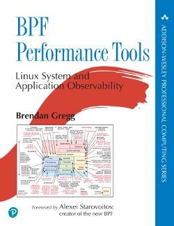

<!DOCTYPE html>
<!-- saved from url=(0068)http://www.brendangregg.com/blog/2016-08-09/gdb-example-ncurses.html -->
<html><head><meta http-equiv="Content-Type" content="text/html; charset=UTF-8">
        
        <meta http-equiv="X-UA-Compatible" content="IE=edge,chrome=1">
        <title>gdb Debugging Full Example (Tutorial): ncurses</title>
        <meta name="viewport" content="width=device-width">
	<meta name="description" content="gdb Debugging Full Example (Tutorial): analyzing ncurses on Linux. This gdb analysis example includes full output, not just the commands used.">
	<meta name="keywords" content="gdb,gdb example,gdb tutorial,debugging,blog">

        <!-- syntax highlighting CSS -->
        <link rel="stylesheet" href="./gdb-Debugging-Full-Example(Tutorial)_files/syntax.css">

        <!-- Custom CSS -->
        <link rel="stylesheet" href="./gdb-Debugging-Full-Example(Tutorial)_files/main.css">

<script type="text/javascript" async="" src="./gdb-Debugging-Full-Example(Tutorial)_files/ga.js.下载"></script><script type="text/javascript">
  var _gaq = _gaq || [];
  _gaq.push(['_setAccount', 'UA-7747513-3']);
  _gaq.push(['_trackPageview']);
  (function() {
    var ga = document.createElement('script'); ga.type = 'text/javascript'; ga.async = true;
    ga.src = ('https:' == document.location.protocol ? 'https://ssl' : 'http://www') + '.google-analytics.com/ga.js';
    var s = document.getElementsByTagName('script')[0]; s.parentNode.insertBefore(ga, s);
  })();
</script>

    <script type="text/javascript" async="" src="./gdb-Debugging-Full-Example(Tutorial)_files/embed.js.下载"></script><link rel="prefetch" as="style" href="https://c.disquscdn.com/next/embed/styles/lounge.953a2bd009935f47a8e815c3ee2bfc5a.css"><link rel="prefetch" as="script" href="https://c.disquscdn.com/next/embed/common.bundle.5f8b92104a5a7633e982c8a37c2b8c8e.js"><link rel="prefetch" as="script" href="https://c.disquscdn.com/next/embed/lounge.bundle.8fbc0da8feaf56b2ed5ec440d881f17c.js"><link rel="prefetch" as="script" href="https://disqus.com/next/config.js"></head>
    <body>

	<div class="nav">
	<p class="navhdr">This Site:</p>
<a href="http://www.brendangregg.com/index.html">Homepage</a><br>
<a href="http://www.brendangregg.com/blog/index.html">Blog</a><br>
<a href="http://www.brendangregg.com/sitemap.html">Full Site Map</a><br>
<a href="http://www.brendangregg.com/sysperfbook.html">Sys Perf book</a><br>
<a href="http://www.brendangregg.com/linuxperf.html">Linux Perf</a><br>
<a href="http://www.brendangregg.com/methodology.html">Perf Methods</a><br>
<a href="http://www.brendangregg.com/usemethod.html">USE Method</a><br>
<a href="http://www.brendangregg.com/tsamethod.html">TSA Method</a><br>
<a href="http://www.brendangregg.com/offcpuanalysis.html">Off-CPU Analysis</a><br>
<a href="http://www.brendangregg.com/activebenchmarking.html">Active Bench.</a><br>
<a href="http://www.brendangregg.com/flamegraphs.html">Flame Graphs</a><br>
<a href="http://www.brendangregg.com/heatmaps.html">Heat Maps</a><br>
<a href="http://www.brendangregg.com/frequencytrails.html">Frequency Trails</a><br>
<a href="http://www.brendangregg.com/colonygraphs.html">Colony Graphs</a><br>
<a href="http://www.brendangregg.com/perf.html">perf Examples</a><br>
<a href="http://www.brendangregg.com/ebpf.html">eBPF Tools</a><br>
<a href="http://www.brendangregg.com/dtrace.html">DTrace Tools</a><br>
<a href="http://www.brendangregg.com/dtracetoolkit.html">DTraceToolkit</a><br>
<a href="http://www.brendangregg.com/dtkshdemos.html">DtkshDemos</a><br>
<a href="http://www.brendangregg.com/guessinggame.html">Guessing Game</a><br>
<a href="http://www.brendangregg.com/specials.html">Specials</a><br>
<a href="http://www.brendangregg.com/books.html">Books</a><br>
<a href="http://www.brendangregg.com/sites.html">Other Sites</a><br>

	</div>

	<div class="recent">
<!-- recent books: -->
<center><a href="http://www.brendangregg.com/bpf-performance-tools-book.html"></a><br><font size="-2"><i><a href="http://www.brendangregg.com/bpf-performance-tools-book.html">BPF Performance Tools book</a></i></font></center>
<br><center><a href="https://www.portal.reinvent.awsevents.com/connect/search.ww?#loadSearch-searchPhrase=OPN303&amp;searchType=session&amp;tc=0&amp;sortBy=abbreviationSort&amp;p="></a><br><font size="-2"><i>I'm speaking at <a href="https://www.portal.reinvent.awsevents.com/connect/search.ww?#loadSearch-searchPhrase=OPN303&amp;searchType=session&amp;tc=0&amp;sortBy=abbreviationSort&amp;p=">AWS re:Invent 2019</a></i></font></center>
<br>
	Recent posts:<br>
	<ul style="padding-left:18px">
	  
		   <li>15 Oct 2019 »<br>
		   <a href="http://www.brendangregg.com/blog/2019-10-15/kernelrecipes-kernel-ftrace-internals.html">  
		   Two kernel mysteries and the most technical talk I've ever seen</a></li>
	  
		   <li>15 Jul 2019 »<br>
		   <a href="http://www.brendangregg.com/blog/2019-07-15/bpf-performance-tools-book.html">  
		   BPF Performance Tools: Linux System and Application Observability (book)</a></li>
	  
		   <li>26 Apr 2019 »<br>
		   <a href="http://www.brendangregg.com/blog/2019-04-26/yow2018-cloud-performance-netflix.html">  
		   YOW! 2018 Cloud Performance Root Cause Analysis at Netflix</a></li>
	  
		   <li>01 Jan 2019 »<br>
		   <a href="http://www.brendangregg.com/blog/2019-01-01/learn-ebpf-tracing.html">  
		   Learn eBPF Tracing: Tutorial and Examples</a></li>
	  
		   <li>08 Nov 2018 »<br>
		   <a href="http://www.brendangregg.com/blog/2018-11-08/flamescope-pattern-recognition.html">  
		   FlameScope Pattern Recognition</a></li>
	  
		   <li>08 Oct 2018 »<br>
		   <a href="http://www.brendangregg.com/blog/2018-10-08/dtrace-for-linux-2018.html">  
		   bpftrace (DTrace 2.0) for Linux 2018</a></li>
	  
		   <li>30 Jun 2018 »<br>
		   <a href="http://www.brendangregg.com/blog/2018-06-30/benchmarking-checklist.html">  
		   Evaluating the Evaluation: A Benchmarking Checklist</a></li>
	  
		   <li>31 May 2018 »<br>
		   <a href="http://www.brendangregg.com/blog/2018-05-31/linux-tcpdrop.html">  
		   Linux bcc/eBPF tcpdrop</a></li>
	  
		   <li>30 Apr 2018 »<br>
		   <a href="http://www.brendangregg.com/blog/2018-04-30/usenix-lisa-2018-cfp.html">  
		   USENIX LISA 2018: CFP Now Open</a></li>
	  
		   <li>22 Mar 2018 »<br>
		   <a href="http://www.brendangregg.com/blog/2018-03-22/tcp-tracepoints.html">  
		   TCP Tracepoints</a></li>
	  
		   <li>09 Feb 2018 »<br>
		   <a href="http://www.brendangregg.com/blog/2018-02-09/kpti-kaiser-meltdown-performance.html">  
		   KPTI/KAISER Meltdown Initial Performance Regressions</a></li>
	  
		   <li>17 Jan 2018 »<br>
		   <a href="http://www.brendangregg.com/blog/2018-01-17/measure-working-set-size.html">  
		   How To Measure the Working Set Size on Linux</a></li>
	  
		   <li>31 Dec 2017 »<br>
		   <a href="http://www.brendangregg.com/blog/2017-12-31/reinvent-netflix-ec2-tuning.html">  
		   AWS re:Invent 2017: How Netflix Tunes EC2</a></li>
	  
		   <li>29 Nov 2017 »<br>
		   <a href="http://www.brendangregg.com/blog/2017-11-29/aws-ec2-virtualization-2017.html">  
		   AWS EC2 Virtualization 2017: Introducing Nitro</a></li>
	  
		   <li>13 Nov 2017 »<br>
		   <a href="http://www.brendangregg.com/blog/2017-11-13/brilliant-jerks.html">  
		   Brilliant Jerks in Engineering</a></li>
	  
		   <li>28 Oct 2017 »<br>
		   <a href="http://www.brendangregg.com/blog/2017-10-28/bsd-performance-analysis-methodologies.html">  
		   EuroBSDcon: System Performance Analysis Methodologies</a></li>
	  
		   <li>05 Sep 2017 »<br>
		   <a href="http://www.brendangregg.com/blog/2017-09-05/solaris-to-linux-2017.html">  
		   Solaris to Linux Migration 2017</a></li>
	  
		   <li>24 Aug 2017 »<br>
		   <a href="http://www.brendangregg.com/blog/2017-08-24/total-solar-eclipse-2017.html">  
		   Total Solar Eclipse 2017</a></li>
	  
		   <li>08 Aug 2017 »<br>
		   <a href="http://www.brendangregg.com/blog/2017-08-08/linux-load-averages.html">  
		   Linux Load Averages: Solving the Mystery</a></li>
	  
		   <li>30 Jul 2017 »<br>
		   <a href="http://www.brendangregg.com/blog/2017-07-30/coloring-flamegraphs-code-type.html">  
		   Coloring Flame Graphs: Code Hues</a></li>
	  
	</ul>
	<a href="http://www.brendangregg.com/blog/index.html">Blog index</a><br>
	<a href="http://www.brendangregg.com/blog/about.html">About</a><br>
	<a href="http://www.brendangregg.com/blog/rss.xml">RSS</a><br>
<!--
	<br><center><a href="https://www.usenix.org/conference/lisa18"></a><br><font size=-2><i>I am program co-chair for LISA 2018</i></font></center>
-->
	</div>

        <div class="site">
          <div class="header">
            <h1 class="title"><a href="http://www.brendangregg.com/blog/index.html">Brendan Gregg's Blog</a></h1>
            <a class="extra" href="http://www.brendangregg.com/blog/index.html">home</a>
          </div>

          <h2 class="big">gdb Debugging Full Example (Tutorial): ncurses</h2>
<p class="meta">09 Aug 2016</p>

<div class="post">
<p>I'm a little frustrated with finding "gdb examples" online that show the commands but not their output. gdb is the GNU Debugger, the standard debugger on Linux. I was reminded of the lack of example output when watching the <a href="http://undo.io/resources/presentations/cppcon-2015-greg-law-give-me-15-minutes-ill-change/">Give me 15 minutes and I'll change your view of GDB</a> talk by Greg Law at CppCon 2015, which, thankfully, includes output! It's well worth the 15 minutes.</p>

<p>It also inspired me to share a full gdb debugging example, with output and every step involved, including dead ends. This isn't a particularly interesting or exotic issue, it's just a routine gdb debugging session. But it covers the basics and could serve as a tutorial of sorts, bearing in mind there's a lot more to gdb than I used here.</p>

<p>I'll be running the following commands as root, since I'm debugging a tool that needs root access (for now). Substitute non-root and sudo as desired. You also aren't expected to read through all this: I've enumerated each step so you can browse them and find ones of interest.</p>

<h2>1. The Problem</h2>

<p>The <a href="https://github.com/iovisor/bcc">bcc</a> collection of BPF tools had a pull request for <a href="https://github.com/iovisor/bcc/blob/master/tools/cachetop.py">cachetop</a>, which uses a top-like display to show page cache statistics by process. Great! However, when I tested it, it hit a segfault:</p>

<pre># <b>./cachetop.py</b>
Segmentation fault
</pre>

<p>Note that it says "Segmentation fault" and not "Segmentation fault (core dumped)". I'd like a core dump to debug this. (A core dump is a copy of process memory – the name coming from the era of magnetic core memory – and can be investigated using a debugger.)</p>

<p>Core dump analysis is one approach for debugging, but not the only one. I could run the program live in gdb to inspect the issue. I could also use an external tracer to grab data and stack traces on segfault events. We'll start with core dumps.</p>

<h2>2. Fixing Core Dumps</h2>

<p>I'll check the core dump settings:</p>

<pre># <b>ulimit -c</b>
0
# <b>cat /proc/sys/kernel/core_pattern</b>
core
</pre>

<p><tt>ulimit -c</tt> shows the maximum size of core dumps created, and it's set to zero: disabling core dumps (for this process and its children).</p>

<p>The <tt>/proc/.../core_pattern</tt> is set to just "core", which will drop a core dump file called "core" in the current directory. That will be ok for now, but I'll show how to set this up for a global location:</p>

<pre># <b>ulimit -c unlimited</b>
# <b>mkdir /var/cores</b>
# <b>echo "/var/cores/core.%e.%p" &gt; /proc/sys/kernel/core_pattern</b>
</pre>

<p>You can customize that core_pattern further; eg, <tt>%h</tt> for hostname and <tt>%t</tt> for time of dump. The options are documented in the Linux kernel source, under Documentation/sysctl/<a href="https://www.kernel.org/doc/Documentation/sysctl/kernel.txt">kernel.txt</a>.</p>

<p>To make the core_pattern permanent, and survive reboots, you can set it via "kernel.core_pattern" in /etc/sysctl.conf.</p>

<p>Trying again:</p>

<pre># <b>./cachetop.py</b>
Segmentation fault (core dumped)
# <b>ls -lh /var/cores</b>
total 19M
-rw------- 1 root root 20M Aug  7 22:15 core.python.30520
# <b>file /var/cores/core.python.30520 </b>
/var/cores/core.python.30520: ELF 64-bit LSB core file x86-64, version 1 (SYSV), SVR4-style, from 'python ./cachetop.py'
</pre>

<p>That's better: we have our core dump.</p>

<h2>3. Starting GDB</h2>

<p>Now I'll run gdb with the target program location (using shell substitution, "`", although you should specify the full path unless you're sure that will work), and the core dump file:</p>

<pre># <b>gdb `which python` /var/cores/core.python.30520</b>
GNU gdb (Ubuntu 7.11.1-0ubuntu1~16.04) 7.11.1
Copyright (C) 2016 Free Software Foundation, Inc.
License GPLv3+: GNU GPL version 3 or later <http: gnu.org="" licenses="" gpl.html="">
This is free software: you are free to change and redistribute it.
There is NO WARRANTY, to the extent permitted by law.  Type "show copying"
and "show warranty" for details.
This GDB was configured as "x86_64-linux-gnu".
Type "show configuration" for configuration details.
For bug reporting instructions, please see:
<http: www.gnu.org="" software="" gdb="" bugs="">.
Find the GDB manual and other documentation resources online at:
<http: www.gnu.org="" software="" gdb="" documentation="">.
For help, type "help".
Type "apropos word" to search for commands related to "word"...
Reading symbols from /usr/bin/python...(no debugging symbols found)...done.

warning: core file may not match specified executable file.
[New LWP 30520]
[Thread debugging using libthread_db enabled]
Using host libthread_db library "/lib/x86_64-linux-gnu/libthread_db.so.1".

warning: JITed object file architecture unknown is not compatible with target architecture i386:x86-64.
Core was generated by `python ./cachetop.py'.
Program terminated with signal SIGSEGV, Segmentation fault.
#0  0x00007f0a37aac40d in doupdate () from /lib/x86_64-linux-gnu/libncursesw.so.5
</http:></http:></http:></pre>

<p>The last two lines are especially interesting: it tells us it's a segmentation fault in the <tt>doupdate()</tt> function from the libncursesw library. That's worth a quick web search in case it's a well-known issue. I took a quick look but didn't find a single common cause.</p>

<p>I already can guess what libncursesw is for, but if that were foreign to you, then being under "/lib" and ending in ".so.*" shows it's a shared library, which might have a man page, website, package description, etc.</p>

<pre># <b>dpkg -l | grep libncursesw</b>
ii  libncursesw5:amd64                  6.0+20160213-1ubuntu1                    amd64
     shared libraries for terminal handling (wide character support)
</pre>

<p>I happen to be debugging this on Ubuntu, but the Linux distro shouldn't matter for gdb usage.</p>

<h2>4. Back Trace</h2>

<p>Stack back traces show how we arrived at the point of fail, and are often enough to help identify a common problem. It's usually the first command I use in a gdb session: <tt>bt</tt> (short for <tt>backtrace</tt>):</p>

<pre>(gdb) <b>bt</b>
#0  0x00007f0a37aac40d in doupdate () from /lib/x86_64-linux-gnu/libncursesw.so.5
#1  0x00007f0a37aa07e6 in wrefresh () from /lib/x86_64-linux-gnu/libncursesw.so.5
#2  0x00007f0a37a99616 in ?? () from /lib/x86_64-linux-gnu/libncursesw.so.5
#3  0x00007f0a37a9a325 in wgetch () from /lib/x86_64-linux-gnu/libncursesw.so.5
#4  0x00007f0a37cc6ec3 in ?? () from /usr/lib/python2.7/lib-dynload/_curses.x86_64-linux-gnu.so
#5  0x00000000004c4d5a in PyEval_EvalFrameEx ()
#6  0x00000000004c2e05 in PyEval_EvalCodeEx ()
#7  0x00000000004def08 in ?? ()
#8  0x00000000004b1153 in PyObject_Call ()
#9  0x00000000004c73ec in PyEval_EvalFrameEx ()
#10 0x00000000004c2e05 in PyEval_EvalCodeEx ()
#11 0x00000000004caf42 in PyEval_EvalFrameEx ()
#12 0x00000000004c2e05 in PyEval_EvalCodeEx ()
#13 0x00000000004c2ba9 in PyEval_EvalCode ()
#14 0x00000000004f20ef in ?? ()
#15 0x00000000004eca72 in PyRun_FileExFlags ()
#16 0x00000000004eb1f1 in PyRun_SimpleFileExFlags ()
#17 0x000000000049e18a in Py_Main ()
#18 0x00007f0a3be10830 in __libc_start_main (main=0x49daf0 &lt;main&gt;, argc=2, argv=0x7ffd33d94838, init=&lt;optimized out&gt;, fini=&lt;optimized out&gt;, rtld_fini=&lt;optimized out&gt;, 
    stack_end=0x7ffd33d94828) at ../csu/libc-start.c:291
#19 0x000000000049da19 in _start ()
</pre>

<p>Read from bottom up, to go from parent to child. The "<tt>??</tt>" entries are where symbol translation failed. Stack walking – which produces the stack trace – can also fail. In that case you'll likely see a single valid frame, then a small number of bogus addresses. If symbols or stacks are too badly broken to make sense of the stack trace, then there are usually ways to fix it: installing debug info packages (giving gdb more symbols, and letting it do DWARF-based stack walks), or recompiling the software from source with frame pointers and debugging information (<tt>-fno-omit-frame-pointer -g</tt>). Many of the above "<tt>??</tt>" entries can be fixed by adding the python-dbg package.</p>

<p>This particular stack doesn't look very helpful: frames 5 to 17 (indexed on the left) are Python internals, although we can't see the Python methods (yet). Then frame 4 is the _curses library, then we're in libncursesw. Looks like <tt>wgetch()</tt>-&gt;<tt>wrefresh()</tt>-&gt;<tt>doupdate()</tt>. Just based on the names, I'd guess a window refresh. Why would that core dump?</p>

<h2>5. Disassembly</h2>

<p>I'll start by disassembling the function we segfaulted in, <tt>doupdate()</tt>:</p>

<pre>(gdb) <b>disas doupdate</b>
Dump of assembler code for function doupdate:
   0x00007f0a37aac2e0 &lt;+0&gt;:   push   %r15
   0x00007f0a37aac2e2 &lt;+2&gt;:   push   %r14
   0x00007f0a37aac2e4 &lt;+4&gt;:   push   %r13
   0x00007f0a37aac2e6 &lt;+6&gt;:   push   %r12
   0x00007f0a37aac2e8 &lt;+8&gt;:   push   %rbp
   0x00007f0a37aac2e9 &lt;+9&gt;:   push   %rbx
   0x00007f0a37aac2ea &lt;+10&gt;:  sub    $0xc8,%rsp
[...]
---Type &lt;return&gt; to continue, or q &lt;return&gt; to quit---
[...]
   0x00007f0a37aac3f7 &lt;+279&gt;: cmpb   $0x0,0x21(%rcx)
   0x00007f0a37aac3fb &lt;+283&gt;: je     0x7f0a37aacc3b &lt;doupdate+2395&gt;
   0x00007f0a37aac401 &lt;+289&gt;: mov    0x20cb68(%rip),%rax        # 0x7f0a37cb8f70
   0x00007f0a37aac408 &lt;+296&gt;: mov    (%rax),%rsi
   0x00007f0a37aac40b &lt;+299&gt;: xor    %eax,%eax
=&gt; 0x00007f0a37aac40d &lt;+301&gt;: mov    0x10(%rsi),%rdi
   0x00007f0a37aac411 &lt;+305&gt;: cmpb   $0x0,0x1c(%rdi)
   0x00007f0a37aac415 &lt;+309&gt;: jne    0x7f0a37aac6f7 &lt;doupdate+1047&gt;
   0x00007f0a37aac41b &lt;+315&gt;: movswl 0x4(%rcx),%ecx
   0x00007f0a37aac41f &lt;+319&gt;: movswl 0x74(%rdx),%edi
   0x00007f0a37aac423 &lt;+323&gt;: mov    %rax,0x40(%rsp)
[...]
</pre>

<p>Output truncated. (I could also have just typed "<tt>disas</tt>" and it would have defaulted to <tt>doupdate</tt>.)</p>

<p>The arrow "=&gt;" is pointing to our segfault address, which is doing a <tt>mov 0x10(%rsi),%rdi</tt>: a move from the memory pointed to in the %rsi register plus an offset of 0x10, to the %rdi register. I'll check the state of the registers next.</p>

<h2>6. Check Registers</h2>

<p>Printing register state using <tt>i r</tt> (short for <tt>info registers</tt>):</p>

<pre>(gdb) <b>i r</b>
rax            0x0  0
rbx            0x1993060    26816608
rcx            0x19902a0    26804896
rdx            0x19ce7d0    27060176
rsi            0x0  0
rdi            0x19ce7d0    27060176
rbp            0x7f0a3848eb10   0x7f0a3848eb10 &lt;SP&gt;
rsp            0x7ffd33d93c00   0x7ffd33d93c00
r8             0x7f0a37cb93e0   139681862489056
r9             0x0  0
r10            0x8  8
r11            0x202    514
r12            0x0  0
r13            0x0  0
r14            0x7f0a3848eb10   139681870703376
r15            0x19ce7d0    27060176
rip            0x7f0a37aac40d   0x7f0a37aac40d &lt;doupdate+301&gt;
eflags         0x10246  [ PF ZF IF RF ]
cs             0x33 51
ss             0x2b 43
ds             0x0  0
es             0x0  0
fs             0x0  0
gs             0x0  0
</pre>

<p>Well, %rsi is zero. There's our problem! Zero is unlikely a valid address, and this type of segfault is a common software bug: dereferencing an uninitialized or NULL pointer.</p>

<h2>7. Memory Mappings</h2>

<p>You can double check if zero is valid using <tt>i proc m</tt> (short for <tt>info proc mappings</tt>):</p>

<pre>(gdb) <b>i proc m</b>
Mapped address spaces:

      Start Addr           End Addr       Size     Offset objfile
        0x400000           0x6e7000   0x2e7000        0x0 /usr/bin/python2.7
        0x8e6000           0x8e8000     0x2000   0x2e6000 /usr/bin/python2.7
        0x8e8000           0x95f000    0x77000   0x2e8000 /usr/bin/python2.7
  0x7f0a37a8b000     0x7f0a37ab8000    0x2d000        0x0 /lib/x86_64-linux-gnu/libncursesw.so.5.9
  0x7f0a37ab8000     0x7f0a37cb8000   0x200000    0x2d000 /lib/x86_64-linux-gnu/libncursesw.so.5.9
  0x7f0a37cb8000     0x7f0a37cb9000     0x1000    0x2d000 /lib/x86_64-linux-gnu/libncursesw.so.5.9
  0x7f0a37cb9000     0x7f0a37cba000     0x1000    0x2e000 /lib/x86_64-linux-gnu/libncursesw.so.5.9
  0x7f0a37cba000     0x7f0a37ccd000    0x13000        0x0 /usr/lib/python2.7/lib-dynload/_curses.x86_64-linux-gnu.so
  0x7f0a37ccd000     0x7f0a37ecc000   0x1ff000    0x13000 /usr/lib/python2.7/lib-dynload/_curses.x86_64-linux-gnu.so
  0x7f0a37ecc000     0x7f0a37ecd000     0x1000    0x12000 /usr/lib/python2.7/lib-dynload/_curses.x86_64-linux-gnu.so
  0x7f0a37ecd000     0x7f0a37ecf000     0x2000    0x13000 /usr/lib/python2.7/lib-dynload/_curses.x86_64-linux-gnu.so
  0x7f0a38050000     0x7f0a38066000    0x16000        0x0 /lib/x86_64-linux-gnu/libgcc_s.so.1
  0x7f0a38066000     0x7f0a38265000   0x1ff000    0x16000 /lib/x86_64-linux-gnu/libgcc_s.so.1
  0x7f0a38265000     0x7f0a38266000     0x1000    0x15000 /lib/x86_64-linux-gnu/libgcc_s.so.1
  0x7f0a38266000     0x7f0a3828b000    0x25000        0x0 /lib/x86_64-linux-gnu/libtinfo.so.5.9
  0x7f0a3828b000     0x7f0a3848a000   0x1ff000    0x25000 /lib/x86_64-linux-gnu/libtinfo.so.5.9
[...]
</pre>

<p>The first valid virtual address is 0x400000. Anything below that is invalid, and if referenced, will trigger a segmentation fault.</p>

<p>At this point there are several different ways to dig further. I'll start with some instruction stepping.</p>

<h2>8. Breakpoints</h2>

<p>Back to the disassembly:</p>

<pre>   0x00007f0a37aac401 &lt;+289&gt;:   mov    0x20cb68(%rip),%rax        # 0x7f0a37cb8f70
   0x00007f0a37aac408 &lt;+296&gt;:   mov    (%rax),%rsi
   0x00007f0a37aac40b &lt;+299&gt;:   xor    %eax,%eax
=&gt; 0x00007f0a37aac40d &lt;+301&gt;:   mov    0x10(%rsi),%rdi
</pre>

<p>Reading these four instructions: it looks like it's pulling something from the stack into %rax, then dereferencing %rax into %rsi, the setting %eax to zero (the xor is an optimization, instead of doing a mov of $0), and then we dereference %rsi with an offset, although we know %rsi is zero. This sequence is for walking data structures. Maybe %rax would be interesting, but it's been set to zero by the prior instruction, so we can't see it in the core dump register state.</p>

<p>I can set a breakpoint on doupdate+289, then single-step through each instruction to see how the registers are set and change. First, I need to launch gdb so that we're executing the program live:</p>

<pre># <b>gdb `which python`</b>
GNU gdb (Ubuntu 7.11.1-0ubuntu1~16.04) 7.11.1
Copyright (C) 2016 Free Software Foundation, Inc.
License GPLv3+: GNU GPL version 3 or later <http: gnu.org="" licenses="" gpl.html="">
This is free software: you are free to change and redistribute it.
There is NO WARRANTY, to the extent permitted by law.  Type "show copying"
and "show warranty" for details.
This GDB was configured as "x86\_64-linux-gnu".
Type "show configuration" for configuration details.
For bug reporting instructions, please see:
<http: www.gnu.org="" software="" gdb="" bugs="">.
Find the GDB manual and other documentation resources online at:
<http: www.gnu.org="" software="" gdb="" documentation="">.
For help, type "help".
Type "apropos word" to search for commands related to "word"...
Reading symbols from /usr/bin/python...(no debugging symbols found)...done.
</http:></http:></http:></pre>

<p>Now to set the breakpoint using <tt>b</tt> (short for <tt>break</tt>):</p>

<pre>(gdb) <b>b *doupdate + 289</b>
No symbol table is loaded.  Use the "file" command.
</pre>

<p>Oops. I wanted to show this error to explain why we often start out with a breakpoint on <tt>main</tt>, at which point the symbols are likely loaded, and then setting the real breakpoint of interest. I'll go straight to <tt>doupdate</tt> function entry, run the problem, then set the offset breakpoint once it hits the function:</p>

<pre>(gdb) <b>b doupdate</b>
Function "doupdate" not defined.
Make breakpoint pending on future shared library load? (y or [n]) <b>y</b>
Breakpoint 1 (doupdate) pending.
(gdb) <b>r cachetop.py</b>
Starting program: /usr/bin/python cachetop.py
[Thread debugging using libthread_db enabled]
Using host libthread_db library "/lib/x86_64-linux-gnu/libthread_db.so.1".
warning: JITed object file architecture unknown is not compatible with target architecture i386:x86-64.

Breakpoint 1, 0x00007ffff34ad2e0 in doupdate () from /lib/x86_64-linux-gnu/libncursesw.so.5
(gdb) <b>b *doupdate + 289</b>
Breakpoint 2 at 0x7ffff34ad401
(gdb) <b>c</b>
Continuing.

Breakpoint 2, 0x00007ffff34ad401 in doupdate () from /lib/x86_64-linux-gnu/libncursesw.so.5
</pre>

<p>We've arrived at our breakpoint.</p>

<p>If you haven't done this before, the <tt>r</tt> (<tt>run</tt>) command takes arguments that will be passed to the gdb target we specified earlier on the command line (python). So this ends up running "python cachetop.py".</p>

<h2>9. Stepping</h2>

<p>I'll step one instruction (<tt>si</tt>, short for <tt>stepi</tt>) then inspect registers:</p>

<pre>(gdb) <b>si</b>
0x00007ffff34ad408 in doupdate () from /lib/x86_64-linux-gnu/libncursesw.so.5
(gdb) <b>i r</b>
rax            0x7ffff3e8f948   140737285519688
rbx            0xaea060 11444320
rcx            0xae72a0 11432608
rdx            0xa403d0 10748880
rsi            0x7ffff7ea8e10   140737352732176
rdi            0xa403d0 10748880
rbp            0x7ffff3e8fb10   0x7ffff3e8fb10 &lt;SP&gt;
rsp            0x7fffffffd390   0x7fffffffd390
r8             0x7ffff36ba3e0   140737277305824
r9             0x0  0
r10            0x8  8
r11            0x202    514
r12            0x0  0
r13            0x0  0
r14            0x7ffff3e8fb10   140737285520144
r15            0xa403d0 10748880
rip            0x7ffff34ad408   0x7ffff34ad408 &lt;doupdate+296&gt;
eflags         0x202    [ IF ]
cs             0x33 51
ss             0x2b 43
ds             0x0  0
es             0x0  0
fs             0x0  0
gs             0x0  0
(gdb) <b>p/a 0x7ffff3e8f948</b>
$1 = 0x7ffff3e8f948 &lt;cur_term&gt;
</pre>

<p>Another clue. So the NULL pointer we're dereferencing looks like it's in a symbol called "<tt>cur_term</tt>" (<tt>p/a</tt> is short for <tt>print/a</tt>, where "<tt>/a</tt>" means format as an address). Given this is ncurses, is our TERM environment set to something odd?</p>

<pre># <b>echo $TERM</b>
xterm-256color
</pre>

<p>I tried setting that to vt100 and running the program, but it hit the same segfault.</p>

<p>Note that I've inspected just the first invocation of <tt>doupdate()</tt>, but it could be called multiple times, and the issue may be a later invocation. I can step through each by running <tt>c</tt> (short for <tt>continue</tt>). That will be ok if it's only called a few times, but if it's called a few thousand times I'll want a different approach. (I'll get back to this in section 15.)</p>

<h2>10. Reverse Stepping</h2>

<p>gdb has a great feature called reverse stepping, which Greg Law included in his talk. Here's an example.</p>

<p>I'll start a python session again, to show this from the beginning:</p>

<pre># <b>gdb `which python`</b>
GNU gdb (Ubuntu 7.11.1-0ubuntu1~16.04) 7.11.1
Copyright (C) 2016 Free Software Foundation, Inc.
License GPLv3+: GNU GPL version 3 or later <http: gnu.org="" licenses="" gpl.html="">
This is free software: you are free to change and redistribute it.
There is NO WARRANTY, to the extent permitted by law.  Type "show copying"
and "show warranty" for details.
This GDB was configured as "x86\_64-linux-gnu".
Type "show configuration" for configuration details.
For bug reporting instructions, please see:
&lt;http://www.gnu.org/software/gdb/bugs/&gt;.
Find the GDB manual and other documentation resources online at:
&lt;http://www.gnu.org/software/gdb/documentation/&gt;.
For help, type "help".
Type "apropos word" to search for commands related to "word"...
Reading symbols from /usr/bin/python...(no debugging symbols found)...done.
</http:></pre>

<p>Now I'll set a breakpoint on <tt>doupdate</tt> as before, but once it's hit, I'll enable recording, then continue the program and let it crash. Recording adds considerable overhead, so I don't want to add it on <tt>main</tt>.</p>

<pre>(gdb) <b>b doupdate</b>
Function "doupdate" not defined.
Make breakpoint pending on future shared library load? (y or [n]) <b>y</b>
Breakpoint 1 (doupdate) pending.
(gdb) <b>r cachetop.py</b>
Starting program: /usr/bin/python cachetop.py
[Thread debugging using libthread_db enabled]
Using host libthread_db library "/lib/x86_64-linux-gnu/libthread_db.so.1".
warning: JITed object file architecture unknown is not compatible with target architecture i386:x86-64.

Breakpoint 1, 0x00007ffff34ad2e0 in doupdate () from /lib/x86_64-linux-gnu/libncursesw.so.5
(gdb) <b>record</b>
(gdb) <b>c</b>
Continuing.

Program received signal SIGSEGV, Segmentation fault.
0x00007ffff34ad40d in doupdate () from /lib/x86_64-linux-gnu/libncursesw.so.5
</pre>

<p>At this point I can reverse-step through lines or instructions. It works by playing back register state from our recording. I'll move back in time two instructions, then print registers:</p>

<pre>(gdb) <b>reverse-stepi</b>
0x00007ffff34ad40d in doupdate () from /lib/x86_64-linux-gnu/libncursesw.so.5
(gdb) <b>reverse-stepi</b>
0x00007ffff34ad40b in doupdate () from /lib/x86_64-linux-gnu/libncursesw.so.5
(gdb) <b>i r</b>
rax            0x7ffff3e8f948   140737285519688
rbx            0xaea060 11444320
rcx            0xae72a0 11432608
rdx            0xa403d0 10748880
rsi            0x0  0
rdi            0xa403d0 10748880
rbp            0x7ffff3e8fb10   0x7ffff3e8fb10 &lt;SP&gt;
rsp            0x7fffffffd390   0x7fffffffd390
r8             0x7ffff36ba3e0   140737277305824
r9             0x0  0
r10            0x8  8
r11            0x302    770
r12            0x0  0
r13            0x0  0
r14            0x7ffff3e8fb10   140737285520144
r15            0xa403d0 10748880
rip            0x7ffff34ad40b   0x7ffff34ad40b &lt;doupdate+299&gt;
eflags         0x202    [ IF ]
cs             0x33 51
ss             0x2b 43
ds             0x0  0
es             0x0  0
fs             0x0  0
gs             0x0  0
(gdb) <b>p/a</b> 0x7ffff3e8f948
$1 = 0x7ffff3e8f948 &lt;cur_term&gt;
</pre>

<p>So, back to finding the "cur_term" clue. I really want to read the source code at this point, but I'll start with debug info.</p>

<h2>11. Debug Info</h2>

<p>This is libncursesw, and I don't have debug info installed (Ubuntu):</p>

<pre># <b>apt-cache search libncursesw</b>
libncursesw5 - shared libraries for terminal handling (wide character support)
libncursesw5-dbg - debugging/profiling libraries for ncursesw
libncursesw5-dev - developer's libraries for ncursesw
# <b>dpkg -l | grep libncursesw</b>
ii  libncursesw5:amd64                  6.0+20160213-1ubuntu1                    amd64        shared libraries for terminal handling (wide character support)
</pre>

<p>I'll add that:</p>

<pre># <b>apt-get install -y libncursesw5-dbg</b>
Reading package lists... Done
Building dependency tree       
Reading state information... Done
[...]
After this operation, 2,488 kB of additional disk space will be used.
Get:1 http://us-west-1.ec2.archive.ubuntu.com/ubuntu xenial/main amd64 libncursesw5-dbg amd64 6.0+20160213-1ubuntu1 [729 kB]
Fetched 729 kB in 0s (865 kB/s)          
Selecting previously unselected package libncursesw5-dbg.
(Reading database ... 200094 files and directories currently installed.)
Preparing to unpack .../libncursesw5-dbg_6.0+20160213-1ubuntu1_amd64.deb ...
Unpacking libncursesw5-dbg (6.0+20160213-1ubuntu1) ...
Setting up libncursesw5-dbg (6.0+20160213-1ubuntu1) ...
# <b>dpkg -l | grep libncursesw</b>
ii  libncursesw5:amd64                  6.0+20160213-1ubuntu1                    amd64        shared libraries for terminal handling (wide character support)
ii  libncursesw5-dbg                    6.0+20160213-1ubuntu1                    amd64        debugging/profiling libraries for ncursesw
</pre>

<p>Good, those versions match. So how does our segfault look now?</p>

<pre># <b>gdb `which python` /var/cores/core.python.30520</b>
GNU gdb (Ubuntu 7.11.1-0ubuntu1~16.04) 7.11.1
[...]
warning: JITed object file architecture unknown is not compatible with target architecture i386:x86-64.
Core was generated by `python ./cachetop.py'.
Program terminated with signal SIGSEGV, Segmentation fault.
#0  ClrBlank (win=0x1993060) at /build/ncurses-pKZ1BN/ncurses-6.0+20160213/ncurses/tty/tty_update.c:1129
1129        if (back_color_erase)
(gdb) <b>bt</b>
#0  ClrBlank (win=0x1993060) at /build/ncurses-pKZ1BN/ncurses-6.0+20160213/ncurses/tty/tty_update.c:1129
#1  ClrUpdate () at /build/ncurses-pKZ1BN/ncurses-6.0+20160213/ncurses/tty/tty_update.c:1147
#2  doupdate () at /build/ncurses-pKZ1BN/ncurses-6.0+20160213/ncurses/tty/tty_update.c:1010
#3  0x00007f0a37aa07e6 in wrefresh (win=win@entry=0x1993060) at /build/ncurses-pKZ1BN/ncurses-6.0+20160213/ncurses/base/lib_refresh.c:65
#4  0x00007f0a37a99499 in recur_wrefresh (win=win@entry=0x1993060) at /build/ncurses-pKZ1BN/ncurses-6.0+20160213/ncurses/base/lib_getch.c:384
#5  0x00007f0a37a99616 in _nc_wgetch (win=win@entry=0x1993060, result=result@entry=0x7ffd33d93e24, use_meta=1)
    at /build/ncurses-pKZ1BN/ncurses-6.0+20160213/ncurses/base/lib_getch.c:491
#6  0x00007f0a37a9a325 in wgetch (win=0x1993060) at /build/ncurses-pKZ1BN/ncurses-6.0+20160213/ncurses/base/lib_getch.c:672
#7  0x00007f0a37cc6ec3 in ?? () from /usr/lib/python2.7/lib-dynload/_curses.x86_64-linux-gnu.so
#8  0x00000000004c4d5a in PyEval_EvalFrameEx ()
#9  0x00000000004c2e05 in PyEval_EvalCodeEx ()
#10 0x00000000004def08 in ?? ()
#11 0x00000000004b1153 in PyObject_Call ()
#12 0x00000000004c73ec in PyEval_EvalFrameEx ()
#13 0x00000000004c2e05 in PyEval_EvalCodeEx ()
#14 0x00000000004caf42 in PyEval_EvalFrameEx ()
#15 0x00000000004c2e05 in PyEval_EvalCodeEx ()
#16 0x00000000004c2ba9 in PyEval_EvalCode ()
#17 0x00000000004f20ef in ?? ()
#18 0x00000000004eca72 in PyRun_FileExFlags ()
#19 0x00000000004eb1f1 in PyRun_SimpleFileExFlags ()
#20 0x000000000049e18a in Py_Main ()
#21 0x00007f0a3be10830 in __libc_start_main (main=0x49daf0 &lt;main&gt;, argc=2, argv=0x7ffd33d94838, init=&lt;optimized out&gt;, fini=&lt;optimized out&gt;, rtld_fini=&lt;optimized out&gt;, 
    stack_end=0x7ffd33d94828) at ../csu/libc-start.c:291
#22 0x000000000049da19 in _start ()
</pre>

<p>The stack trace looks a bit different: we aren't really in <tt>doupdate()</tt>, but <tt>ClrBlank()</tt>, which has been inlined in <tt>ClrUpdate()</tt>, and inlined in <tt>doupdate()</tt>.</p>

<p>Now I really want to see source.</p>

<h2>12. Source Code</h2>

<p>With the debug info package installed, gdb can list the source along with the assembly:</p>

<pre>(gdb) <b>disas/s</b>
Dump of assembler code for function doupdate:
/build/ncurses-pKZ1BN/ncurses-6.0+20160213/ncurses/tty/tty_update.c:
759 {
   0x00007f0a37aac2e0 &lt;+0&gt;:   push   %r15
   0x00007f0a37aac2e2 &lt;+2&gt;:   push   %r14
   0x00007f0a37aac2e4 &lt;+4&gt;:   push   %r13
   0x00007f0a37aac2e6 &lt;+6&gt;:   push   %r12
[...]
   0x00007f0a37aac3dd &lt;+253&gt;: jne    0x7f0a37aac6ca &lt;doupdate+1002&gt;

1009        if (CurScreen(SP_PARM)-&gt;_clear || NewScreen(SP_PARM)-&gt;_clear) {   /* force refresh ? */
   0x00007f0a37aac3e3 &lt;+259&gt;: mov    0x80(%rdx),%rax
   0x00007f0a37aac3ea &lt;+266&gt;: mov    0x88(%rdx),%rcx
   0x00007f0a37aac3f1 &lt;+273&gt;: cmpb   $0x0,0x21(%rax)
   0x00007f0a37aac3f5 &lt;+277&gt;: jne    0x7f0a37aac401 &lt;doupdate+289&gt;
   0x00007f0a37aac3f7 &lt;+279&gt;: cmpb   $0x0,0x21(%rcx)
   0x00007f0a37aac3fb &lt;+283&gt;: je     0x7f0a37aacc3b &lt;doupdate+2395&gt;

1129        if (back_color_erase)
   0x00007f0a37aac401 &lt;+289&gt;: mov    0x20cb68(%rip),%rax        # 0x7f0a37cb8f70
   0x00007f0a37aac408 &lt;+296&gt;: mov    (%rax),%rsi

1128        NCURSES_CH_T blank = blankchar;
   0x00007f0a37aac40b &lt;+299&gt;: xor    %eax,%eax

1129        if (back_color_erase)
=&gt; 0x00007f0a37aac40d &lt;+301&gt;: mov    0x10(%rsi),%rdi
   0x00007f0a37aac411 &lt;+305&gt;: cmpb   $0x0,0x1c(%rdi)
   0x00007f0a37aac415 &lt;+309&gt;: jne    0x7f0a37aac6f7 &lt;doupdate+1047&gt;
</pre>

<p>Great! See the arrow "=&gt;" and the line of code above it. So we're segfaulting on "<tt>if (back_color_erase)</tt>"? That doesn't seem possible. (A segfault would be due to a memory dereference, which in C would be <tt>a-&gt;b</tt> or <tt>*a</tt>, but in this case it's just "<tt>back_color_erase</tt>", which looks like it's accessing an ordinary variable and not dereferencing memory.)</p>

<p>At this point I double checked that I had the right debug info version, and re-ran the application to segfault it in a live gdb session. Same place.</p>

<p>Is there something special about <tt>back_color_erase</tt>? We're in <tt>ClrBlank()</tt>, so I'll list that source code:</p>

<pre>(gdb) <b>list ClrBlank</b>
1124    
1125    static NCURSES_INLINE NCURSES_CH_T
1126    ClrBlank(NCURSES_SP_DCLx WINDOW *win)
1127    {
1128        NCURSES_CH_T blank = blankchar;
1129        if (back_color_erase)
1130        AddAttr(blank, (AttrOf(BCE_BKGD(SP_PARM, win)) &amp; BCE_ATTRS));
1131        return blank;
1132    }
1133    
</pre>

<p>Ah, that's not defined in the function, so it's a global?</p>

<h2>13. TUI</h2>

<p>It's worth showing how this looks in the gdb text user interface (TUI), which I haven't used that much but was inspired after seeing Greg's talk.</p>

<p>You can launch it using <tt>--tui</tt>:</p>

<pre># <b>gdb --tui `which python` /var/cores/core.python.30520</b>
   ┌───────────────────────────────────────────────────────────────────────────┐
   │                                                                           │
   │                                                                           │
   │                                                                           │
   │                                                                           │
   │                                                                           │
   │                                                                           │
   │             [ No Source Available ]                                       │
   │                                                                           │
   │                                                                           │
   │                                                                           │
   │                                                                           │
   │                                                                           │
   │                                                                           │
   └───────────────────────────────────────────────────────────────────────────┘
None No process In:                                                L??   PC: ?? 
GNU gdb (Ubuntu 7.11.1-0ubuntu1~16.04) 7.11.1
Copyright (C) 2016 Free Software Foundation, Inc.
License GPLv3+: GNU GPL version 3 or later <http: gnu.org="" licenses="" gpl.html="">
This is free software: you are free to change and redistribute it.
There is NO WARRANTY, to the extent permitted by law.  Type "show copying"
and "show warranty" for details.
This GDB was configured as "x86_64-linux-gnu".
---Type <return> to continue, or q <return> to quit---
</return></return></http:></pre>

<p>It's complaining about no Python source. I could fix that, but we're crashing in libncursesw. Hitting enter lets it finish loading, at which point it loads the libncursesw debug info source code:</p>

<pre>   ┌──/build/ncurses-pKZ1BN/ncurses-6.0+20160213/ncurses/tty/tty_update.c──────┐
   │1124                                                                       │
   │1125    static NCURSES_INLINE NCURSES_CH_T                                 │
   │1126    ClrBlank(NCURSES_SP_DCLx WINDOW *win)                              │
   │1127    {                                                                  │
   │1128        NCURSES_CH_T blank = blankchar;                                │
  &gt;│1129        if (back_color_erase)                                          │
   │1130            AddAttr(blank, (AttrOf(BCE_BKGD(SP_PARM, win)) &amp; BCE_ATTRS)│
   │1131        return blank;                                                  │
   │1132    }                                                                  │
   │1133                                                                       │
   │1134    /*                                                                 │
   │1135    **      ClrUpdate()                                                │
   │1136    **                                                                 │
   └───────────────────────────────────────────────────────────────────────────┘
multi-thre Thread 0x7f0a3c5e87 In: doupdate            L1129 PC: 0x7f0a37aac40d 
warning: JITed object file architecture unknown is not compatible with target ar
chitecture i386:x86-64.
---Type &lt;return&gt; to continue, or q &lt;return&gt; to quit---
Core was generated by `python ./cachetop.py'.
Program terminated with signal SIGSEGV, Segmentation fault.
#0  ClrBlank (win=0x1993060)
    at /build/ncurses-pKZ1BN/ncurses-6.0+20160213/ncurses/tty/tty_update.c:1129
(gdb) 
</pre>

<p>Awesome!</p>

<p>The arrow "&gt;" shows the line of code that we crashed in. It gets even better: with the <tt>layout split</tt> command we can follow the source with the disassembly in separate windows:</p>

<pre>   ┌──/build/ncurses-pKZ1BN/ncurses-6.0+20160213/ncurses/tty/tty_update.c──────┐
  &gt;│1129        if (back_color_erase)                                          │
   │1130            AddAttr(blank, (AttrOf(BCE_BKGD(SP_PARM, win)) &amp; BCE_ATTRS)│
   │1131        return blank;                                                  │
   │1132    }                                                                  │
   │1133                                                                       │
   │1134    /*                                                                 │
   │1135    **      ClrUpdate()                                                │
   └───────────────────────────────────────────────────────────────────────────┘
  &gt;│0x7f0a37aac40d &lt;doupdate+301&gt;   mov    0x10(%rsi),%rdi                     │
   │0x7f0a37aac411 &lt;doupdate+305&gt;   cmpb   $0x0,0x1c(%rdi)                     │
   │0x7f0a37aac415 &lt;doupdate+309&gt;   jne    0x7f0a37aac6f7 &lt;doupdate+1047&gt;      │
   │0x7f0a37aac41b &lt;doupdate+315&gt;   movswl 0x4(%rcx),%ecx                      │
   │0x7f0a37aac41f &lt;doupdate+319&gt;   movswl 0x74(%rdx),%edi                     │
   │0x7f0a37aac423 &lt;doupdate+323&gt;   mov    %rax,0x40(%rsp)                     │
   │0x7f0a37aac428 &lt;doupdate+328&gt;   movl   $0x20,0x48(%rsp)                    │
   │0x7f0a37aac430 &lt;doupdate+336&gt;   movl   $0x0,0x4c(%rsp)                     │
   └───────────────────────────────────────────────────────────────────────────┘
multi-thre Thread 0x7f0a3c5e87 In: doupdate            L1129 PC: 0x7f0a37aac40d 

chitecture i386:x86-64.
Core was generated by `python ./cachetop.py'.
Program terminated with signal SIGSEGV, Segmentation fault.
---Type &lt;return&gt; to continue, or q &lt;return&gt; to quit---
#0  ClrBlank (win=0x1993060)
    at /build/ncurses-pKZ1BN/ncurses-6.0+20160213/ncurses/tty/tty_update.c:1129
(gdb) <b>layout split</b>
</pre>

<p>Greg demonstrated this with reverse stepping, so you can imagine following both code and assembly execution at the same time (I'd need a video to demonstrate that here).</p>

<h2>14. External: cscope</h2>

<p>I still want to learn more about <tt>back_color_erase</tt>, and I could try gdb's <tt>search</tt> command, but I've found I'm quicker using an external tool: cscope. cscope is a text-based source code browser from Bell Labs in the 1980's. If you have a modern IDE that you prefer, use that instead.</p>

<p>Setting up cscope:</p>

<pre># <b>apt-get install -y cscope</b>
# <b>wget http://archive.ubuntu.com/ubuntu/pool/main/n/ncurses/ncurses_6.0+20160213.orig.tar.gz</b>
# <b>tar xvf ncurses_6.0+20160213.orig.tar.gz</b>
# <b>cd ncurses-6.0-20160213</b>
# <b>cscope -bqR</b>
# <b>cscope -dq</b>
</pre>

<p><tt>cscope -bqR</tt> builds the lookup database. <tt>cscope -dq</tt> then launches cscope.</p>

<p>Searching for <tt>back_color_erase</tt> definition:</p>

<pre>Cscope version 15.8b                                   Press the ? key for help


Find this C symbol:
Find this global definition: <b>back_color_erase</b>
Find functions called by this function:
Find functions calling this function:
Find this text string:
Change this text string:
Find this egrep pattern:
Find this file:
Find files #including this file:
Find assignments to this symbol:
</pre>

<p>Hitting enter:</p>

<pre>[...]
#define non_dest_scroll_region         CUR Booleans[26]
#define can_change                     CUR Booleans[27]
<b>#define back_color_erase               CUR Booleans[28]</b>
#define hue_lightness_saturation       CUR Booleans[29]
#define col_addr_glitch                CUR Booleans[30]
#define cr_cancels_micro_mode          CUR Booleans[31]
[...]
</pre>

<p>Oh, a <tt>#define</tt>. (They could have at least capitalized it, as is a common style with <tt>#define</tt>'s.)</p>

<p>Ok, so what's <tt>CUR</tt>? Looking up definitions in cscope is a breeze.</p>

<pre>#define CUR cur_term-&gt;type.                                                     
</pre>

<p>At least that <tt>#define</tt> is capitalized!</p>

<p>We'd found <tt>cur_term</tt> earlier, by stepping instructions and examining registers. What is it?</p>

<pre>#if 0 &amp;&amp; !0
extern NCURSES_EXPORT_VAR(TERMINAL *) cur_term;
#elif 0
NCURSES_WRAPPED_VAR(TERMINAL *, cur_term);
#define cur_term   NCURSES_PUBLIC_VAR(cur_term())
#else
<b>extern NCURSES_EXPORT_VAR(TERMINAL *) cur_term;</b>
#endif
</pre>

<p>cscope read /usr/include/term.h for this. So, more macros. I had to highlight in bold the line of code I think is taking effect there. Why is there an "<tt>if 0 &amp;&amp; !0 ... elif 0</tt>"? I don't know (I'd need to read more source). Sometimes programmers use "<tt>#if 0</tt>" around debug code they want to disable in production, however, this looks auto-generated.</p>

<p>Searching for <tt>NCURSES_EXPORT_VAR</tt> finds:</p>

<pre>#  define NCURSES_EXPORT_VAR(type) NCURSES_IMPEXP type
</pre>

<p>... and <tt>NCURSES_IMPEXP</tt>:</p>

<pre>/* Take care of non-cygwin platforms */
#if !defined(NCURSES_IMPEXP)          
#  define NCURSES_IMPEXP /* nothing */
#endif                                
#if !defined(NCURSES_API)             
#  define NCURSES_API /* nothing */   
#endif                                
#if !defined(NCURSES_EXPORT)          
#  define NCURSES_EXPORT(type) NCURSES_IMPEXP type NCURSES_API
#endif                                
#if !defined(NCURSES_EXPORT_VAR)      
#  define NCURSES_EXPORT_VAR(type) NCURSES_IMPEXP type
#endif  
</pre>

<p>... and <tt>TERMINAL</tt> was:</p>

<pre>typedef struct term {       /* describe an actual terminal */
    TERMTYPE    type;       /* terminal type description */
    short   Filedes;    /* file description being written to */
    TTY     Ottyb,      /* original state of the terminal */
        Nttyb;      /* current state of the terminal */
    int     _baudrate;  /* used to compute padding */
    char *      _termname;      /* used for termname() */
} TERMINAL;
</pre>

<p>Gah! Now <tt>TERMINAL</tt> is capitalized. Along with the macros, this code is not that easy to follow...</p>

<p>Ok, who actually sets <tt>cur_term</tt>? Remember our problem is that it's set to zero, maybe because it's uninitialized or explicitly set. Browsing the code paths that set it might provide more clues, to help answer why it isn't being set, or why it is set to zero. Using the first option in cscope:</p>

<pre>Find this C symbol: <b>cur_term</b>
Find this global definition:
Find functions called by this function:
Find functions calling this function:
[...]
</pre>

<p>And browsing the entries quickly finds:</p>

<pre>NCURSES_EXPORT(TERMINAL *)
NCURSES_SP_NAME(<b>set_curterm</b>) (NCURSES_SP_DCLx TERMINAL * termp)
{
    TERMINAL *oldterm;

    T((T_CALLED("set_curterm(%p)"), (void *) termp));

    _nc_lock_global(curses);
    oldterm = cur_term;
    if (SP_PARM)
    SP_PARM-&gt;_term = termp;
#if USE_REENTRANT
    CurTerm = termp;
#else
    <b>cur_term = termp;</b>
#endif
</pre>

<p>I added the highlighting. Even the function name is wrapped in a macro. But at least we've found how <tt>cur_term</tt> is set: via <tt>set_curterm()</tt>. Maybe that isn't being called?</p>

<h2>15. External: perf-tools/ftrace/uprobes</h2>

<p>I'll cover using gdb for this in a moment, but I can't help trying the uprobe tool from my <a href="https://github.com/brendangregg/perf-tools">perf-tools</a> collection, which uses Linux ftrace and uprobes. One advantage of using tracers is that they don't pause the target process, like gdb does (although that doesn't matter for this cachetop.py example). Another advantage is that I can trace a few events or a few thousand just as easily.</p>

<p>I should be able to trace calls to <tt>set_curterm()</tt> in libncursesw, and even print the first argument:</p>

<pre># <b>/apps/perf-tools/bin/uprobe 'p:/lib/x86_64-linux-gnu/libncursesw.so.5:set_curterm %di'</b>
ERROR: missing symbol "set_curterm" in /lib/x86_64-linux-gnu/libncursesw.so.5
</pre>

<p>Well, that didn't work. Where is <tt>set_curterm()</tt>? There are lots of ways to find it, like gdb or objdump:</p>

<pre>(gdb) <b>info symbol set_curterm</b>
set_curterm in section .text of /lib/x86_64-linux-gnu/libtinfo.so.5

# <b>objdump -tT /lib/x86_64-linux-gnu/libncursesw.so.5 | grep cur_term</b>
0000000000000000      DO *UND*  0000000000000000  NCURSES_TINFO_5.0.19991023 cur_term
# <b>objdump -tT /lib/x86_64-linux-gnu/libtinfo.so.5 | grep cur_term</b>
0000000000228948 g    DO .bss   0000000000000008  NCURSES_TINFO_5.0.19991023 cur_term
</pre>

<p>gdb works better. Plus if I took a closer look at the source, I would have noticed it was building it for libtinfo.</p>

<p>Trying to trace <tt>set_curterm()</tt> in libtinfo:</p>

<pre># <b>/apps/perf-tools/bin/uprobe 'p:/lib/x86_64-linux-gnu/libtinfo.so.5:set_curterm %di'</b>
Tracing uprobe set_curterm (p:set_curterm /lib/x86_64-linux-gnu/libtinfo.so.5:0xfa80 %di). Ctrl-C to end.
          python-31617 [007] d... 24236402.719959: set_curterm: (0x7f116fcc2a80) arg1=0x1345d70
          python-31617 [007] d... 24236402.720033: set_curterm: (0x7f116fcc2a80) arg1=0x13a22e0
          python-31617 [007] d... 24236402.723804: set_curterm: (0x7f116fcc2a80) arg1=0x14cdfa0
          python-31617 [007] d... 24236402.723838: set_curterm: (0x7f116fcc2a80) arg1=0x0
^C
</pre>

<p>That works. So <tt>set_curterm()</tt> <em>is</em> called, and has been called four times. The last time it was passed zero, which sounds like it could be the problem.</p>

<p>If you're wondering how I knew the %di register was the first argument, then it comes from the AMD64/x86_64 ABI (and the assumption that this compiled library is ABI compliant). Here's a reminder:</p>

<pre># <b>man syscall</b>
[...]
       arch/ABI      arg1  arg2  arg3  arg4  arg5  arg6  arg7  Notes
       ──────────────────────────────────────────────────────────────────
       arm/OABI      a1    a2    a3    a4    v1    v2    v3
       arm/EABI      r0    r1    r2    r3    r4    r5    r6
       arm64         x0    x1    x2    x3    x4    x5    -
       blackfin      R0    R1    R2    R3    R4    R5    -
       i386          ebx   ecx   edx   esi   edi   ebp   -
       ia64          out0  out1  out2  out3  out4  out5  -
       mips/o32      a0    a1    a2    a3    -     -     -     See below
       mips/n32,64   a0    a1    a2    a3    a4    a5    -
       parisc        r26   r25   r24   r23   r22   r21   -
       s390          r2    r3    r4    r5    r6    r7    -
       s390x         r2    r3    r4    r5    r6    r7    -
       sparc/32      o0    o1    o2    o3    o4    o5    -
       sparc/64      o0    o1    o2    o3    o4    o5    -
       x86_64        rdi   rsi   rdx   r10   r8    r9    -
[...]
</pre>

<p>I'd also like to see a stack trace for arg1=0x0 invocation, but this ftrace tool doesn't support stack traces yet.</p>

<h2>16. External: bcc/BPF</h2>

<p>Since we're debugging a bcc tool, cachetop.py, it's worth noting that bcc's trace.py has capabilities like my older uprobe tool:</p>

<pre># <b>./trace.py 'p:tinfo:set_curterm "%d", arg1'</b>
TIME     PID    COMM         FUNC             -
01:00:20 31698  python       set_curterm      38018416
01:00:20 31698  python       set_curterm      38396640
01:00:20 31698  python       set_curterm      39624608
01:00:20 31698  python       set_curterm      0
</pre>

<p>Yes, we're using bcc to debug bcc!</p>

<p>If you are new to <a href="https://github.com/iovisor/bcc">bcc</a>, it's worth checking it out. It provides Python and lua interfaces for the new BPF tracing features that are in the Linux 4.x series. In short, it allows lots of performance tools that were previously impossible or prohibitively expensive to run. I've posted instructions for running it on <a href="http://www.brendangregg.com/blog/2016-06-14/ubuntu-xenial-bcc-bpf.html">Ubuntu Xenial</a>.</p>

<p>The bcc trace.py tool should have a switch for printing user stack traces, since the kernel now has BPF stack capabilities as of Linux 4.6, although at the time of writing we haven't added this switch yet.</p>

<h2>17. More Breakpoints</h2>

<p>I should really have used gdb breakpoints on <tt>set_curterm()</tt> to start with, but I hope that was an interesting detour through ftrace and BPF.</p>

<p>Back to live running mode:</p>

<pre># <b>gdb `which python`</b>
GNU gdb (Ubuntu 7.11.1-0ubuntu1~16.04) 7.11.1
[...]
(gdb) <b>b set_curterm</b>
Function "set_curterm" not defined.
Make breakpoint pending on future shared library load? (y or [n]) <b>y</b>
Breakpoint 1 (set_curterm) pending.
(gdb) <b>r cachetop.py</b>
Starting program: /usr/bin/python cachetop.py
[Thread debugging using libthread_db enabled]
Using host libthread_db library "/lib/x86_64-linux-gnu/libthread_db.so.1".

Breakpoint 1, set_curterm (termp=termp@entry=0xa43150) at /build/ncurses-pKZ1BN/ncurses-6.0+20160213/ncurses/tinfo/lib_cur_term.c:80
80  {
(gdb) <b>c</b>
Continuing.

Breakpoint 1, set_curterm (termp=termp@entry=0xab5870) at /build/ncurses-pKZ1BN/ncurses-6.0+20160213/ncurses/tinfo/lib_cur_term.c:80
80  {
(gdb) <b>c</b>
Continuing.

Breakpoint 1, set_curterm (termp=termp@entry=0xbecb90) at /build/ncurses-pKZ1BN/ncurses-6.0+20160213/ncurses/tinfo/lib_cur_term.c:80
80  {
(gdb) <b>c</b>
Continuing.

Breakpoint 1, set_curterm (termp=0x0) at /build/ncurses-pKZ1BN/ncurses-6.0+20160213/ncurses/tinfo/lib_cur_term.c:80
80  {
</pre>

<p>Ok, at this breakpoint we can see that <tt>set_curterm()</tt> is being invoked with a termp=0x0 argument, thanks to debuginfo for that information. If I didn't have debuginfo, I could just print the registers on each breakpoint.</p>

<p>I'll print the stack trace so that we can see <em>who</em> was setting <tt>curterm</tt> to 0.</p>

<pre>(gdb) <b>bt</b>
#0  set_curterm (termp=0x0) at /build/ncurses-pKZ1BN/ncurses-6.0+20160213/ncurses/tinfo/lib_cur_term.c:80
#1  0x00007ffff5a44e75 in llvm::sys::Process::FileDescriptorHasColors(int) () from /usr/lib/x86_64-linux-gnu/libbcc.so.0
#2  0x00007ffff45cabb8 in clang::driver::tools::Clang::ConstructJob(clang::driver::Compilation&amp;, clang::driver::JobAction const&amp;, clang::driver::InputInfo const&amp;, llvm::SmallVector&lt;clang::driver::InputInfo, 4u&gt; const&amp;, llvm::opt::ArgList const&amp;, char const*) const () from /usr/lib/x86_64-linux-gnu/libbcc.so.0
#3  0x00007ffff456ffa5 in clang::driver::Driver::BuildJobsForAction(clang::driver::Compilation&amp;, clang::driver::Action const*, clang::driver::ToolChain const*, char const*, bool, bool, char const*, clang::driver::InputInfo&amp;) const () from /usr/lib/x86_64-linux-gnu/libbcc.so.0
#4  0x00007ffff4570501 in clang::driver::Driver::BuildJobs(clang::driver::Compilation&amp;) const () from /usr/lib/x86_64-linux-gnu/libbcc.so.0
#5  0x00007ffff457224a in clang::driver::Driver::BuildCompilation(llvm::ArrayRef&lt;char const*&gt;) () from /usr/lib/x86_64-linux-gnu/libbcc.so.0
#6  0x00007ffff4396cda in ebpf::ClangLoader::parse(std::unique_ptr&lt;llvm::Module, std::default_delete&lt;llvm::Module&gt; &gt;*, std::unique_ptr&lt;std::vector&lt;ebpf::TableDesc, std::allocator&lt;ebpf::TableDesc&gt; &gt;, std::default_delete&lt;std::vector&lt;ebpf::TableDesc, std::allocator&lt;ebpf::TableDesc&gt; &gt; &gt; &gt;*, std::__cxx11::basic_string&lt;char, std::char_traits&lt;char&gt;, std::allocator&lt;char&gt; &gt; const&amp;, bool, char const**, int) () from /usr/lib/x86_64-linux-gnu/libbcc.so.0
#7  0x00007ffff4344314 in ebpf::BPFModule::load_cfile(std::__cxx11::basic_string&lt;char, std::char_traits&lt;char&gt;, std::allocator&lt;char&gt; &gt; const&amp;, bool, char const**, int) ()
   from /usr/lib/x86_64-linux-gnu/libbcc.so.0
#8  0x00007ffff4349e5e in ebpf::BPFModule::load_string(std::__cxx11::basic_string&lt;char, std::char_traits&lt;char&gt;, std::allocator&lt;char&gt; &gt; const&amp;, char const**, int) ()
   from /usr/lib/x86_64-linux-gnu/libbcc.so.0
#9  0x00007ffff43430c8 in bpf_module_create_c_from_string () from /usr/lib/x86_64-linux-gnu/libbcc.so.0
#10 0x00007ffff690ae40 in ffi_call_unix64 () from /usr/lib/x86_64-linux-gnu/libffi.so.6
#11 0x00007ffff690a8ab in ffi_call () from /usr/lib/x86_64-linux-gnu/libffi.so.6
#12 0x00007ffff6b1a68c in _ctypes_callproc () from /usr/lib/python2.7/lib-dynload/_ctypes.x86_64-linux-gnu.so
#13 0x00007ffff6b1ed82 in ?? () from /usr/lib/python2.7/lib-dynload/_ctypes.x86_64-linux-gnu.so
#14 0x00000000004b1153 in PyObject_Call ()
#15 0x00000000004ca5ca in PyEval_EvalFrameEx ()
#16 0x00000000004c2e05 in PyEval_EvalCodeEx ()
#17 0x00000000004def08 in ?? ()
#18 0x00000000004b1153 in PyObject_Call ()
#19 0x00000000004f4c3e in ?? ()
#20 0x00000000004b1153 in PyObject_Call ()
#21 0x00000000004f49b7 in ?? ()
#22 0x00000000004b6e2c in ?? ()
#23 0x00000000004b1153 in PyObject_Call ()
#24 0x00000000004ca5ca in PyEval_EvalFrameEx ()
#25 0x00000000004c2e05 in PyEval_EvalCodeEx ()
#26 0x00000000004def08 in ?? ()
#27 0x00000000004b1153 in PyObject_Call ()
#28 0x00000000004c73ec in PyEval_EvalFrameEx ()
#29 0x00000000004c2e05 in PyEval_EvalCodeEx ()
#30 0x00000000004caf42 in PyEval_EvalFrameEx ()
#31 0x00000000004c2e05 in PyEval_EvalCodeEx ()
#32 0x00000000004c2ba9 in PyEval_EvalCode ()
#33 0x00000000004f20ef in ?? ()
#34 0x00000000004eca72 in PyRun_FileExFlags ()
#35 0x00000000004eb1f1 in PyRun_SimpleFileExFlags ()
#36 0x000000000049e18a in Py_Main ()
#37 0x00007ffff7811830 in __libc_start_main (main=0x49daf0 &lt;main&gt;, argc=2, argv=0x7fffffffdfb8, init=&lt;optimized out&gt;, fini=&lt;optimized out&gt;, rtld_fini=&lt;optimized out&gt;, 
    stack_end=0x7fffffffdfa8) at ../csu/libc-start.c:291
#38 0x000000000049da19 in _start ()
</pre>

<p>Ok, more clues...I think. We're in <tt>llvm::sys::Process::FileDescriptorHasColors()</tt>. The llvm compiler?</p>

<h2>18. External: cscope, take 2</h2>

<p>More source code browsing using cscope, this time in llvm. The FileDescriptorHasColors() function has:</p>

<pre>static bool terminalHasColors(int fd) {
[...]
  // Now extract the structure allocated by setupterm and free its memory
  // through a really silly dance.
  struct term *termp = set_curterm((struct term *)nullptr);
  (void)del_curterm(termp); // Drop any errors here.
</pre>

<p>Here's what that code used to be in an earlier version:</p>

<pre>static bool terminalHasColors() {
  if (const char *term = std::getenv("TERM")) {
    // Most modern terminals support ANSI escape sequences for colors.
    // We could check terminfo, or have a list of known terms that support
    // colors, but that would be overkill.
    // The user can always ask for no colors by setting TERM to dumb, or
    // using a commandline flag.
    return strcmp(term, "dumb") != 0;
  }
  return false;
}
</pre>

<p>It <a href="https://github.com/llvm-mirror/llvm/commit/d485e7bd7639cd6b39c6113a30fbc3cdc8c41c4c#diff-a4fb6575a290937bc9142e3d7efc8989">became</a> a "silly dance" involving calling <tt>set_curterm()</tt> with a null pointer.</p>

<h2>19. Writing Memory</h2>

<p>As an experiment and to explore a possible workaround, I'll modify memory of the running process to avoid the <tt>set_curterm()</tt> of zero.</p>

<p>I'll run gdb, set a breakpoint on <tt>set_curterm()</tt>, and take it to the zero invocation:</p>

<pre># <b>gdb `which python`</b>
GNU gdb (Ubuntu 7.11.1-0ubuntu1~16.04) 7.11.1                                  
[...]
(gdb) <b>b set_curterm</b>
Function "set_curterm" not defined.
Make breakpoint pending on future shared library load? (y or [n]) <b>y</b>
Breakpoint 1 (set_curterm) pending.
(gdb) <b>r cachetop.py</b>
Starting program: /usr/bin/python cachetop.py
[Thread debugging using libthread_db enabled]
Using host libthread_db library "/lib/x86_64-linux-gnu/libthread_db.so.1".

Breakpoint 1, set_curterm (termp=termp@entry=0xa43150) at /build/ncurses-pKZ1BN/ncurses-6.0+20160213/ncurses/tinfo/lib_cur_term.c:80
80      {
(gdb) <b>c</b>
Continuing.

Breakpoint 1, set_curterm (termp=termp@entry=0xab5870) at /build/ncurses-pKZ1BN/ncurses-6.0+20160213/ncurses/tinfo/lib_cur_term.c:80
80      {
(gdb) <b>c</b>
Continuing.

Breakpoint 1, set_curterm (termp=termp@entry=0xbecb90) at /build/ncurses-pKZ1BN/ncurses-6.0+20160213/ncurses/tinfo/lib_cur_term.c:80
80      {
(gdb) <b>c</b>
Continuing.                                                                    
                                                                               
Breakpoint 1, set_curterm (termp=0x0) at /build/ncurses-pKZ1BN/ncurses-6.0+20160213/ncurses/tinfo/lib_cur_term.c:80
80      { 
</pre>

<p>At this point I'll use the <tt>set</tt> command to overwrite memory and replace zero with the previous argument of <tt>set_curterm()</tt>, 0xbecb90, seen above, on the hope that it's still valid.</p>

<p><b>WARNING: Writing memory is not safe!</b> gdb won't ask "are you sure?". If you get it wrong or make a typo, you will corrupt the application. Best case, your application crashes immediately, and you realize your mistake. Worst case, your application continues with silently corrupted data that is only discovered years later.</p>

<p>In this case, I'm experimenting on a lab machine with no production data, so I'll continue. I'll print the value of the %rdi register as hex (<tt>p/x</tt>), then <tt>set</tt> it to the previous address, print it again, then print all registers:</p>

<pre>(gdb) <b>p/x $rdi</b>
$1 = 0x0
(gdb) <b>set $rdi=0xbecb90</b>
(gdb) <b>p/x $rdi</b>
$2 = 0xbecb90
(gdb) <b>i r</b>
rax            0x100    256
rbx            0x1  1
rcx            0xe71    3697
rdx            0x0  0
rsi            0x7ffff5dd45d3   140737318307283
rdi            0xbecb90 12503952
rbp            0x100    0x100
rsp            0x7fffffffa5b8   0x7fffffffa5b8
r8             0xbf0050 12517456
r9             0x1999999999999999   1844674407370955161
r10            0xbf0040 12517440
r11            0x7ffff7bb4b78   140737349634936
r12            0xbecb70 12503920
r13            0xbeaea0 12496544
r14            0x7fffffffa9a0   140737488333216
r15            0x7fffffffa8a0   140737488332960
rip            0x7ffff3c76a80   0x7ffff3c76a80 &lt;set_curterm&gt;
eflags         0x246    [ PF ZF IF ]
cs             0x33 51
ss             0x2b 43
ds             0x0  0
es             0x0  0
fs             0x0  0
gs             0x0  0
</pre>

<p>(Since at this point I have debug info installed, I don't need to refer to registers in this case, I could have called <tt>set</tt> on "<tt>termp</tt>", the variable name argument to <tt>set_curterm()</tt>, instead of <tt>$rdi</tt>.)</p>

<p>%rdi is now populated, so those registers look ok to continue.</p>

<pre>(gdb) <b>c</b>
Continuing.

Breakpoint 1, set_curterm (termp=termp@entry=0x0) at /build/ncurses-pKZ1BN/ncurses-6.0+20160213/ncurses/tinfo/lib_cur_term.c:80
80  {
</pre>

<p>Ok, we survived a call to <tt>set_curterm()</tt>! However, we've hit another, also with an argument of zero. Trying our write trick again:</p>

<pre>(gdb) <b>set $rdi=0xbecb90</b>
(gdb) <b>c</b>
Continuing.
warning: JITed object file architecture unknown is not compatible with target architecture i386:x86-64.

Program received signal SIGSEGV, Segmentation fault.
0x00007ffff34ad411 in ClrBlank (win=0xaea060) at /build/ncurses-pKZ1BN/ncurses-6.0+20160213/ncurses/tty/tty_update.c:1129
1129        if (back_color_erase)
</pre>

<p>Ahhh. That's what I get for writing memory. So this experiment ended in another segfault.</p>

<h2>20. Conditional Breakpoints</h2>

<p>In the previous section, I had to use three continues to reach the right invocation of a breakpoint. If that were hundreds of invocations, then I'd use a conditional breakpoint. Here's an example.</p>

<p>I'll run the program and break on <tt>set_curterm()</tt> as usual:</p>

<pre># <b>gdb `which python`</b>
GNU gdb (Ubuntu 7.11.1-0ubuntu1~16.04) 7.11.1                                  
[...]
(gdb) <b>b set_curterm</b>
Function "set_curterm" not defined.
Make breakpoint pending on future shared library load? (y or [n]) y
Breakpoint 1 (set_curterm) pending.
(gdb) <b>r cachetop.py</b>
Starting program: /usr/bin/python cachetop.py
[Thread debugging using libthread_db enabled]
Using host libthread_db library "/lib/x86_64-linux-gnu/libthread_db.so.1".

Breakpoint 1, set_curterm (termp=termp@entry=0xa43150) at /build/ncurses-pKZ1BN/ncurses-6.0+20160213/ncurses/tinfo/lib_cur_term.c:80
80  {
</pre>

<p>Now I'll turn breakpoint 1 into a conditional breakpoint, so that it only fires when the %rdi register is zero:</p>

<pre>(gdb) <b>cond 1 $rdi==0x0</b>
(gdb) <b>i b</b>
Num     Type           Disp Enb Address            What
1       breakpoint     keep y   0x00007ffff3c76a80 in set_curterm at /build/ncurses-pKZ1BN/ncurses-6.0+20160213/ncurses/tinfo/lib_cur_term.c:80
    stop only if $rdi==0x0
    breakpoint already hit 1 time
(gdb) <b>c</b>
Continuing.

Breakpoint 1, set_curterm (termp=0x0) at /build/ncurses-pKZ1BN/ncurses-6.0+20160213/ncurses/tinfo/lib_cur_term.c:80
(gdb)
</pre>

<p>Neat! <tt>cond</tt> is short for <tt>conditional</tt>. So why didn't I run it right away, when I first created the "pending" breakpoint? I've found conditionals don't work on pending breakpoints, at least on this gdb version. (Either that or I'm doing it wrong.) I also used <tt>i b</tt> here (<tt>info breakpoints</tt>) to list them with information.</p>

<h2>21. Returns</h2>

<p>I did try another write-like hack, but this time changing the instruction path rather than the data.</p>

<p><b>WARNING: see previous warning</b>, which also applies here.</p>

<p>I'll take us to the <tt>set_curterm()</tt> 0x0 breakpoint as before, and then issue a <tt>ret</tt> (short for <tt>return</tt>), which will return from the function immediately and not execute it. My hope is that by not executing it, it won't set the global <tt>curterm</tt> to 0x0.</p>

<pre>[...]
(gdb) <b>c</b>
Continuing.

Breakpoint 1, set_curterm (termp=0x0) at /build/ncurses-pKZ1BN/ncurses-6.0+20160213/ncurses/tinfo/lib_cur_term.c:80

(gdb) <b>ret</b>
Make set_curterm return now? (y or n) <b>y</b>
#0  0x00007ffff5a44e75 in llvm::sys::Process::FileDescriptorHasColors(int) () from /usr/lib/x86_64-linux-gnu/libbcc.so.0
(gdb) <b>c</b>
Continuing.

Program received signal SIGSEGV, Segmentation fault.
                                                    _nc_free_termtype (ptr=ptr@entry=0x100) at /build/ncurses-pKZ1BN/ncurses-6.0+20160213/ncurses/tinfo/free_ttype.c:52
52      FreeIfNeeded(ptr-&gt;str_table);
</pre>

<p>Another crash. Again, that's what I get for messing in this way.</p>

<p>One more try. After browsing the code a bit more, I want to try doing a <tt>ret</tt> twice, in case the parent function is also involved. Again, this is just a hacky experiment:</p>

<pre>[...]
(gdb) <b>c</b>
Continuing.

Breakpoint 1, set_curterm (termp=0x0) at /build/ncurses-pKZ1BN/ncurses-6.0+20160213/ncurses/tinfo/lib_cur_term.c:80
80  {
(gdb) <b>ret</b>
Make set_curterm return now? (y or n) <b>y</b>
#0  0x00007ffff5a44e75 in llvm::sys::Process::FileDescriptorHasColors(int) () from /usr/lib/x86_64-linux-gnu/libbcc.so.0
(gdb) <b>ret</b>
Make selected stack frame return now? (y or n) <b>y</b>
#0  0x00007ffff45cabb8 in clang::driver::tools::Clang::ConstructJob(clang::driver::Compilation&amp;, clang::driver::JobAction const&amp;, clang::driver::InputInfo const&amp;, llvm::SmallVector<clang::driver::inputinfo, 4u=""> const&amp;, llvm::opt::ArgList const&amp;, char const*) const () from /usr/lib/x86_64-linux-gnu/libbcc.so.0
(gdb) <b>c</b>
</clang::driver::inputinfo,></pre>

<p>The screen goes blank and pauses...then redraws:</p>

<pre>07:44:22 Buffers MB: 61 / Cached MB: 1246
PID      UID      CMD              HITS     MISSES   DIRTIES  READ_HIT%  WRITE_HIT%
    2742 root     systemd-logind          3       66        2       1.4%      95.7%
   15836 root     kworker/u30:1           7        0        1      85.7%       0.0%
    2736 messageb dbus-daemon             8       66        2       8.1%      89.2%
       1 root     systemd                15        0        0     100.0%       0.0%
    2812 syslog   rs:main Q:Reg          16       66        8       9.8%      80.5%
     435 root     systemd-journal        32       66        8      24.5%      67.3%
    2740 root     accounts-daemon       113       66        2      62.0%      36.9%
   15847 root     bash                  160        0        1      99.4%       0.0%
   15864 root     lesspipe              306        0        2      99.3%       0.0%
   15854 root     bash                  309        0        2      99.4%       0.0%
   15856 root     bash                  309        0        2      99.4%       0.0%
   15866 root     bash                  309        0        2      99.4%       0.0%
   15867 root     bash                  309        0        2      99.4%       0.0%
   15860 root     bash                  313        0        2      99.4%       0.0%
   15868 root     bash                  341        0        2      99.4%       0.0%
   15858 root     uname                 452        0        2      99.6%       0.0%
   15858 root     bash                  453        0        2      99.6%       0.0%
   15866 root     dircolors             464        0        2      99.6%       0.0%
   15861 root     basename              465        0        2      99.6%       0.0%
   15864 root     dirname               468        0        2      99.6%       0.0%
   15856 root     ls                    476        0        2      99.6%       0.0%
[...]
</pre>

<p>Wow! It's working!</p>

<h2>22. A Better Workaround</h2>

<p>I'd been posting debugging output to <a href="https://github.com/iovisor/bcc/pull/615">github</a>, especially since the lead BPF engineer, Alexei Starovoitov, is also well versed in llvm internals, and the root cause seemed to be a bug in llvm. While I was messing with writes and returns, he suggested adding the llvm option <tt>-fno-color-diagnostics</tt> to bcc, to avoid this problem code path. It worked! It was added to bcc as a workaround. (And we should get that llvm bug fixed.)</p>

<h2>23. Python Context</h2>

<p>At this point we've fixed the problem, but you might be curious to see the stack trace fully fixed.</p>

<p>Adding python-dbg:</p>

<pre># <b>apt-get install -y python-dbg</b>
Reading package lists... Done
[...]
The following additional packages will be installed:
  libpython-dbg libpython2.7-dbg python2.7-dbg
Suggested packages:
  python2.7-gdbm-dbg python2.7-tk-dbg python-gdbm-dbg python-tk-dbg
The following NEW packages will be installed:
  libpython-dbg libpython2.7-dbg python-dbg python2.7-dbg
0 upgraded, 4 newly installed, 0 to remove and 20 not upgraded.
Need to get 11.9 MB of archives.
After this operation, 36.4 MB of additional disk space will be used.
[...]
</pre>

<p>Now I'll rerun gdb and view the stack trace:</p>

<pre># <b>gdb `which python` /var/cores/core.python.30520</b>
GNU gdb (Ubuntu 7.11.1-0ubuntu1~16.04) 7.11.1
[...]
Reading symbols from /usr/bin/python...Reading symbols from /usr/lib/debug/.build-id/4e/a0539215b2a9e32602f81c90240874132c1a54.debug...done.
[...]
(gdb) <b>bt</b>
#0  ClrBlank (win=0x1993060) at /build/ncurses-pKZ1BN/ncurses-6.0+20160213/ncurses/tty/tty_update.c:1129
#1  ClrUpdate () at /build/ncurses-pKZ1BN/ncurses-6.0+20160213/ncurses/tty/tty_update.c:1147
#2  doupdate () at /build/ncurses-pKZ1BN/ncurses-6.0+20160213/ncurses/tty/tty_update.c:1010
#3  0x00007f0a37aa07e6 in wrefresh (win=win@entry=0x1993060) at /build/ncurses-pKZ1BN/ncurses-6.0+20160213/ncurses/base/lib_refresh.c:65
#4  0x00007f0a37a99499 in recur_wrefresh (win=win@entry=0x1993060) at /build/ncurses-pKZ1BN/ncurses-6.0+20160213/ncurses/base/lib_getch.c:384
#5  0x00007f0a37a99616 in _nc_wgetch (win=win@entry=0x1993060, result=result@entry=0x7ffd33d93e24, use_meta=1)
    at /build/ncurses-pKZ1BN/ncurses-6.0+20160213/ncurses/base/lib_getch.c:491
#6  0x00007f0a37a9a325 in wgetch (win=0x1993060) at /build/ncurses-pKZ1BN/ncurses-6.0+20160213/ncurses/base/lib_getch.c:672
#7  0x00007f0a37cc6ec3 in PyCursesWindow_GetCh.lto_priv.109 (self=0x7f0a3c57b198, args=()) at /build/python2.7-HpIZBG/python2.7-2.7.11/Modules/_cursesmodule.c:853
#8  0x00000000004c4d5a in call_function (oparg=&lt;optimized out&gt;, pp_stack=0x7ffd33d93f30) at ../Python/ceval.c:4350
#9  PyEval_EvalFrameEx () at ../Python/ceval.c:2987
#10 0x00000000004c2e05 in PyEval_EvalCodeEx () at ../Python/ceval.c:3582
#11 0x00000000004def08 in function_call.lto_priv () at ../Objects/funcobject.c:523
#12 0x00000000004b1153 in PyObject_Call () at ../Objects/abstract.c:2546
#13 0x00000000004c73ec in ext_do_call (nk=0, na=&lt;optimized out&gt;, flags=&lt;optimized out&gt;, pp_stack=0x7ffd33d941e8, func=&lt;function at remote 0x7f0a37edcc80&gt;)
    at ../Python/ceval.c:4662
#14 PyEval_EvalFrameEx () at ../Python/ceval.c:3026
#15 0x00000000004c2e05 in PyEval_EvalCodeEx () at ../Python/ceval.c:3582
#16 0x00000000004caf42 in fast_function (nk=0, na=&lt;optimized out&gt;, n=&lt;optimized out&gt;, pp_stack=0x7ffd33d943f0, func=&lt;function at remote 0x7f0a38039140&gt;)
    at ../Python/ceval.c:4445
#17 call_function (oparg=&lt;optimized out&gt;, pp_stack=0x7ffd33d943f0) at ../Python/ceval.c:4370
#18 PyEval_EvalFrameEx () at ../Python/ceval.c:2987
#19 0x00000000004c2e05 in PyEval_EvalCodeEx () at ../Python/ceval.c:3582
#20 0x00000000004c2ba9 in PyEval_EvalCode (co=&lt;optimized out&gt;, globals=&lt;optimized out&gt;, locals=&lt;optimized out&gt;) at ../Python/ceval.c:669
#21 0x00000000004f20ef in run_mod.lto_priv () at ../Python/pythonrun.c:1376
#22 0x00000000004eca72 in PyRun_FileExFlags () at ../Python/pythonrun.c:1362
#23 0x00000000004eb1f1 in PyRun_SimpleFileExFlags () at ../Python/pythonrun.c:948
#24 0x000000000049e18a in Py_Main () at ../Modules/main.c:640
#25 0x00007f0a3be10830 in __libc_start_main (main=0x49daf0 &lt;main&gt;, argc=2, argv=0x7ffd33d94838, init=&lt;optimized out&gt;, fini=&lt;optimized out&gt;, rtld_fini=&lt;optimized out&gt;, 
    stack_end=0x7ffd33d94828) at ../csu/libc-start.c:291
#26 0x000000000049da19 in _start ()
</pre>

<p>No more "<tt>??</tt>"'s, but not hugely more helpful, yet.</p>

<p>The python debug packages have added other capabilities to gdb. Now we can look at the python backtrace:</p>

<pre>(gdb) <b>py-bt</b>
Traceback (most recent call first):
  File "./cachetop.py", line 188, in handle_loop
    s = stdscr.getch()
  File "/usr/lib/python2.7/curses/wrapper.py", line 43, in wrapper
    return func(stdscr, *args, **kwds)
  File "./cachetop.py", line 260, in <module>
    curses.wrapper(handle_loop, args)
</module></pre>

<p>... and Python source list:</p>

<pre>(gdb) <b>py-list</b>
 183        b.attach_kprobe(event="mark_buffer_dirty", fn_name="do_count")
 184    
 185        exiting = 0
 186    
 187        while 1:
&gt;188            s = stdscr.getch()
 189            if s == ord('q'):
 190                exiting = 1
 191            elif s == ord('r'):
 192                sort_reverse = not sort_reverse
 193            elif s == ord('&lt;'):
</pre>

<p>It's identifying where in our Python code we were executing that hit the segfault. That's really nice!</p>

<p>The problem with the initial stack trace is that we're seeing Python internals that are executing the methods, but not the methods themselves. If you're debugging another language, it's up to its complier/runtime how it ends up executing code. If you do a web search for "<em>language name</em>" and "gdb" you might find it has gdb debugging extensions like Python does. If it doesn't, the bad news is you'll need to write your own. The good news is that this is even possible! Search for documentation on "adding new GDB commands in Python", as they can be written in Python.</p>

<h2>24. And More</h2>

<p>While it might look like I've written comprehensive tour of gdb, I really haven't: there's a lot more to gdb. The <tt>help</tt> command will list the major sections:</p>

<pre>(gdb) <b>help</b>
List of classes of commands:

aliases -- Aliases of other commands
breakpoints -- Making program stop at certain points
data -- Examining data
files -- Specifying and examining files
internals -- Maintenance commands
obscure -- Obscure features
running -- Running the program
stack -- Examining the stack
status -- Status inquiries
support -- Support facilities
tracepoints -- Tracing of program execution without stopping the program
user-defined -- User-defined commands

Type "help" followed by a class name for a list of commands in that class.
Type "help all" for the list of all commands.
Type "help" followed by command name for full documentation.
Type "apropos word" to search for commands related to "word".
Command name abbreviations are allowed if unambiguous.
</pre>

<p>You can then run <tt>help</tt> on each command class. For example, here's the full listing for breakpoints:</p>

<pre>(gdb) <b>help breakpoints</b>
Making program stop at certain points.

List of commands:

awatch -- Set a watchpoint for an expression
break -- Set breakpoint at specified location
break-range -- Set a breakpoint for an address range
catch -- Set catchpoints to catch events
catch assert -- Catch failed Ada assertions
catch catch -- Catch an exception
catch exception -- Catch Ada exceptions
catch exec -- Catch calls to exec
catch fork -- Catch calls to fork
catch load -- Catch loads of shared libraries
catch rethrow -- Catch an exception
catch signal -- Catch signals by their names and/or numbers
catch syscall -- Catch system calls by their names and/or numbers
catch throw -- Catch an exception
catch unload -- Catch unloads of shared libraries
catch vfork -- Catch calls to vfork
clear -- Clear breakpoint at specified location
commands -- Set commands to be executed when a breakpoint is hit
condition -- Specify breakpoint number N to break only if COND is true
delete -- Delete some breakpoints or auto-display expressions
delete bookmark -- Delete a bookmark from the bookmark list
delete breakpoints -- Delete some breakpoints or auto-display expressions
delete checkpoint -- Delete a checkpoint (experimental)
delete display -- Cancel some expressions to be displayed when program stops
delete mem -- Delete memory region
delete tracepoints -- Delete specified tracepoints
delete tvariable -- Delete one or more trace state variables
disable -- Disable some breakpoints
disable breakpoints -- Disable some breakpoints
disable display -- Disable some expressions to be displayed when program stops
disable frame-filter -- GDB command to disable the specified frame-filter
disable mem -- Disable memory region
disable pretty-printer -- GDB command to disable the specified pretty-printer
disable probes -- Disable probes
disable tracepoints -- Disable specified tracepoints
disable type-printer -- GDB command to disable the specified type-printer
disable unwinder -- GDB command to disable the specified unwinder
disable xmethod -- GDB command to disable a specified (group of) xmethod(s)
dprintf -- Set a dynamic printf at specified location
enable -- Enable some breakpoints
enable breakpoints -- Enable some breakpoints
enable breakpoints count -- Enable breakpoints for COUNT hits
enable breakpoints delete -- Enable breakpoints and delete when hit
enable breakpoints once -- Enable breakpoints for one hit
enable count -- Enable breakpoints for COUNT hits
enable delete -- Enable breakpoints and delete when hit
enable display -- Enable some expressions to be displayed when program stops
enable frame-filter -- GDB command to disable the specified frame-filter
enable mem -- Enable memory region
enable once -- Enable breakpoints for one hit
enable pretty-printer -- GDB command to enable the specified pretty-printer
enable probes -- Enable probes
enable tracepoints -- Enable specified tracepoints
enable type-printer -- GDB command to enable the specified type printer
enable unwinder -- GDB command to enable unwinders
enable xmethod -- GDB command to enable a specified (group of) xmethod(s)
ftrace -- Set a fast tracepoint at specified location
hbreak -- Set a hardware assisted breakpoint
ignore -- Set ignore-count of breakpoint number N to COUNT
rbreak -- Set a breakpoint for all functions matching REGEXP
rwatch -- Set a read watchpoint for an expression
save -- Save breakpoint definitions as a script
save breakpoints -- Save current breakpoint definitions as a script
save gdb-index -- Save a gdb-index file
save tracepoints -- Save current tracepoint definitions as a script
skip -- Ignore a function while stepping
skip delete -- Delete skip entries
skip disable -- Disable skip entries
skip enable -- Enable skip entries
skip file -- Ignore a file while stepping
skip function -- Ignore a function while stepping
strace -- Set a static tracepoint at location or marker
tbreak -- Set a temporary breakpoint
tcatch -- Set temporary catchpoints to catch events
tcatch assert -- Catch failed Ada assertions
tcatch catch -- Catch an exception
tcatch exception -- Catch Ada exceptions
tcatch exec -- Catch calls to exec
tcatch fork -- Catch calls to fork
tcatch load -- Catch loads of shared libraries
tcatch rethrow -- Catch an exception
tcatch signal -- Catch signals by their names and/or numbers
tcatch syscall -- Catch system calls by their names and/or numbers
tcatch throw -- Catch an exception
tcatch unload -- Catch unloads of shared libraries
tcatch vfork -- Catch calls to vfork
thbreak -- Set a temporary hardware assisted breakpoint
trace -- Set a tracepoint at specified location
watch -- Set a watchpoint for an expression

Type "help" followed by command name for full documentation.
Type "apropos word" to search for commands related to "word".
Command name abbreviations are allowed if unambiguous.
</pre>

<p>This helps to illustrate how many capabilities gdb has, and how few I needed to use in this example.</p>

<h2>25. Final Words</h2>

<p>Well, that was kind of a nasty issue: an LLVM bug breaking ncurses and causing a Python program to segfault. But the commands and procedures I used to debug it were mostly routine: viewing stack traces, checking registers, setting breakpoints, stepping, and browsing source. </p>

<p>When I first used gdb (years ago), I really didn't like it. It felt clumsy and limited. gdb has improved a lot since then, as have my gdb skills, and I now see it as a powerful modern debugger. Feature sets vary between debuggers, but gdb may be the most powerful text-based debugger nowadays, with lldb catching up.</p>

<p>I hope anyone searching for gdb examples finds the full output I've shared to be useful, as well as the various caveats I discussed along the way. Maybe I'll post some more gdb sessions when I get a chance, especially for other runtimes like Java.</p>

<p>It's <tt>q</tt> to quit gdb.</p>

</div>


<br><hr>
<div id="disqus_thread"><iframe id="dsq-app758" name="dsq-app758" allowtransparency="true" frameborder="0" scrolling="no" tabindex="0" title="Disqus" width="100%" src="./gdb-Debugging-Full-Example(Tutorial)_files/saved_resource.html" style="width: 1px !important; min-width: 100% !important; border: none !important; overflow: hidden !important; height: 2834px !important;" horizontalscrolling="no" verticalscrolling="no"></iframe></div>
<script type="text/javascript">
var disqus_shortname = 'brendangregg';
(function() {
    var dsq = document.createElement('script'); dsq.type = 'text/javascript'; dsq.async = true;
    dsq.src = '//' + disqus_shortname + '.disqus.com/embed.js';
    (document.getElementsByTagName('head')[0] || document.getElementsByTagName('body')[0]).appendChild(dsq);
})();
</script>
<noscript>Please enable JavaScript to view the <a href="http://disqus.com/?ref_noscript">comments powered by Disqus.</a></noscript>
<p><i>You can comment here, but I can't guarantee your comment will remain here forever: I might switch comment systems at some point (eg, if disqus add advertisements).</i></p>


<div class="recentmobile">
<hr><center>Site Navigation</center><br>
<!-- recent books: -->
<center><a href="http://www.brendangregg.com/bpf-performance-tools-book.html"></a><br><font size="-2"><i><a href="http://www.brendangregg.com/bpf-performance-tools-book.html">BPF Performance Tools book</a></i></font></center>
<br><center><a href="https://www.portal.reinvent.awsevents.com/connect/search.ww?#loadSearch-searchPhrase=OPN303&amp;searchType=session&amp;tc=0&amp;sortBy=abbreviationSort&amp;p="></a><br><font size="-2"><i>I'm speaking at <a href="https://www.portal.reinvent.awsevents.com/connect/search.ww?#loadSearch-searchPhrase=OPN303&amp;searchType=session&amp;tc=0&amp;sortBy=abbreviationSort&amp;p=">AWS re:Invent 2019</a></i></font></center>
<br>

Recent posts:<br>
<ul style="padding-left:18px">
  
	   <li class="recent">15 Oct 2019 »<br>
	   <a href="http://www.brendangregg.com/blog/2019-10-15/kernelrecipes-kernel-ftrace-internals.html">  
	   Two kernel mysteries and the most technical talk I've ever seen</a></li>
  
	   <li class="recent">15 Jul 2019 »<br>
	   <a href="http://www.brendangregg.com/blog/2019-07-15/bpf-performance-tools-book.html">  
	   BPF Performance Tools: Linux System and Application Observability (book)</a></li>
  
	   <li class="recent">26 Apr 2019 »<br>
	   <a href="http://www.brendangregg.com/blog/2019-04-26/yow2018-cloud-performance-netflix.html">  
	   YOW! 2018 Cloud Performance Root Cause Analysis at Netflix</a></li>
  
	   <li class="recent">01 Jan 2019 »<br>
	   <a href="http://www.brendangregg.com/blog/2019-01-01/learn-ebpf-tracing.html">  
	   Learn eBPF Tracing: Tutorial and Examples</a></li>
  
	   <li class="recent">08 Nov 2018 »<br>
	   <a href="http://www.brendangregg.com/blog/2018-11-08/flamescope-pattern-recognition.html">  
	   FlameScope Pattern Recognition</a></li>
  
	   <li class="recent">08 Oct 2018 »<br>
	   <a href="http://www.brendangregg.com/blog/2018-10-08/dtrace-for-linux-2018.html">  
	   bpftrace (DTrace 2.0) for Linux 2018</a></li>
  
	   <li class="recent">30 Jun 2018 »<br>
	   <a href="http://www.brendangregg.com/blog/2018-06-30/benchmarking-checklist.html">  
	   Evaluating the Evaluation: A Benchmarking Checklist</a></li>
  
	   <li class="recent">31 May 2018 »<br>
	   <a href="http://www.brendangregg.com/blog/2018-05-31/linux-tcpdrop.html">  
	   Linux bcc/eBPF tcpdrop</a></li>
  
	   <li class="recent">30 Apr 2018 »<br>
	   <a href="http://www.brendangregg.com/blog/2018-04-30/usenix-lisa-2018-cfp.html">  
	   USENIX LISA 2018: CFP Now Open</a></li>
  
	   <li class="recent">22 Mar 2018 »<br>
	   <a href="http://www.brendangregg.com/blog/2018-03-22/tcp-tracepoints.html">  
	   TCP Tracepoints</a></li>
  
	   <li class="recent">09 Feb 2018 »<br>
	   <a href="http://www.brendangregg.com/blog/2018-02-09/kpti-kaiser-meltdown-performance.html">  
	   KPTI/KAISER Meltdown Initial Performance Regressions</a></li>
  
	   <li class="recent">17 Jan 2018 »<br>
	   <a href="http://www.brendangregg.com/blog/2018-01-17/measure-working-set-size.html">  
	   How To Measure the Working Set Size on Linux</a></li>
  
	   <li class="recent">31 Dec 2017 »<br>
	   <a href="http://www.brendangregg.com/blog/2017-12-31/reinvent-netflix-ec2-tuning.html">  
	   AWS re:Invent 2017: How Netflix Tunes EC2</a></li>
  
	   <li class="recent">29 Nov 2017 »<br>
	   <a href="http://www.brendangregg.com/blog/2017-11-29/aws-ec2-virtualization-2017.html">  
	   AWS EC2 Virtualization 2017: Introducing Nitro</a></li>
  
	   <li class="recent">13 Nov 2017 »<br>
	   <a href="http://www.brendangregg.com/blog/2017-11-13/brilliant-jerks.html">  
	   Brilliant Jerks in Engineering</a></li>
  
	   <li class="recent">28 Oct 2017 »<br>
	   <a href="http://www.brendangregg.com/blog/2017-10-28/bsd-performance-analysis-methodologies.html">  
	   EuroBSDcon: System Performance Analysis Methodologies</a></li>
  
	   <li class="recent">05 Sep 2017 »<br>
	   <a href="http://www.brendangregg.com/blog/2017-09-05/solaris-to-linux-2017.html">  
	   Solaris to Linux Migration 2017</a></li>
  
	   <li class="recent">24 Aug 2017 »<br>
	   <a href="http://www.brendangregg.com/blog/2017-08-24/total-solar-eclipse-2017.html">  
	   Total Solar Eclipse 2017</a></li>
  
	   <li class="recent">08 Aug 2017 »<br>
	   <a href="http://www.brendangregg.com/blog/2017-08-08/linux-load-averages.html">  
	   Linux Load Averages: Solving the Mystery</a></li>
  
	   <li class="recent">30 Jul 2017 »<br>
	   <a href="http://www.brendangregg.com/blog/2017-07-30/coloring-flamegraphs-code-type.html">  
	   Coloring Flame Graphs: Code Hues</a></li>
  
</ul>
<a href="http://www.brendangregg.com/blog/index.html">Blog index</a><br>
<a href="http://www.brendangregg.com/blog/about.html">About</a><br>
<a href="http://www.brendangregg.com/blog/rss.xml">RSS</a><br>
<!-- also edit _layouts/default.html -->
<!--
<br><a href="https://www.usenix.org/conference/lisa18"></a><br><font size=-2><i>I am program co-chair for LISA 2018</i></font>
-->

<hr>
</div>
<div class="navmobile">
<p class="navhdr">This Site:</p>
<a href="http://www.brendangregg.com/overview.html">Start Here</a><br>
<a href="http://www.brendangregg.com/index.html">Homepage</a><br>
<a href="http://www.brendangregg.com/blog/index.html">Blog</a><br>
<!-- <a href="/sitemap.html">Full Site Map</a><br> -->
<a href="http://www.brendangregg.com/bpf-performance-tools-book.html">BPF Perf book</a><br>
<a href="http://www.brendangregg.com/sysperfbook.html">Sys Perf book</a><br>
<a href="http://www.brendangregg.com/linuxperf.html">Linux Perf</a><br>
<a href="http://www.brendangregg.com/methodology.html">Perf Methods</a><br>
<a href="http://www.brendangregg.com/usemethod.html">USE Method</a><br>
<a href="http://www.brendangregg.com/tsamethod.html">TSA Method</a><br>
<a href="http://www.brendangregg.com/offcpuanalysis.html">Off-CPU Analysis</a><br>
<a href="http://www.brendangregg.com/activebenchmarking.html">Active Bench.</a><br>
<a href="http://www.brendangregg.com/wss.html">WSS Estimation</a><br>
<a href="http://www.brendangregg.com/flamegraphs.html">Flame Graphs</a><br>
<a href="http://www.brendangregg.com/heatmaps.html">Heat Maps</a><br>
<a href="http://www.brendangregg.com/frequencytrails.html">Frequency Trails</a><br>
<a href="http://www.brendangregg.com/colonygraphs.html">Colony Graphs</a><br>
<a href="http://www.brendangregg.com/perf.html">perf Examples</a><br>
<a href="http://www.brendangregg.com/ebpf.html">eBPF Tools</a><br>
<a href="http://www.brendangregg.com/dtrace.html">DTrace Tools</a><br>
<a href="http://www.brendangregg.com/dtracetoolkit.html">DTraceToolkit</a><br>
<a href="http://www.brendangregg.com/dtkshdemos.html">DtkshDemos</a><br>
<a href="http://www.brendangregg.com/guessinggame.html">Guessing Game</a><br>
<a href="http://www.brendangregg.com/specials.html">Specials</a><br>
<a href="http://www.brendangregg.com/books.html">Books</a><br>
<a href="http://www.brendangregg.com/sites.html">Other Sites</a><br>

</div>

          <div class="footer">
            <div class="contact">
                Copyright 2019 Brendan Gregg.<br><a href="http://www.brendangregg.com/blog/about.html">About this blog</a>
            </div>
          </div>
        </div>

    

<iframe style="display: none;" src="./gdb-Debugging-Full-Example(Tutorial)_files/saved_resource(1).html"></iframe></body></html>